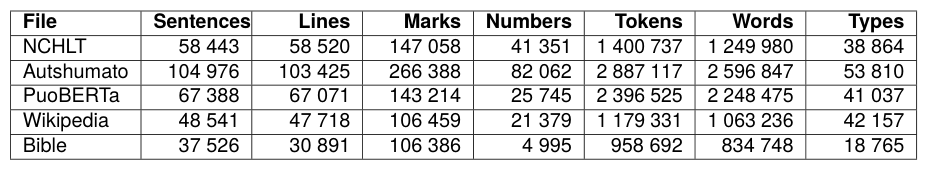

RAIL 2024Original text
Compiling a List of Frequently Used Setswana Words for Developing Readability Measures
This is the original text of the paper. Translations are linked above.
Proceedings of the Fifth Workshop on Resources for African Indigenous Languages @ LREC-COLING 2024.
Original text, shown under its licence (CC BY-NC 4.0). Reuse allowed with attribution, non-commercial only. The translations on this site are by Ernst van Gassen (Arktos AI Lab).
Plain text for reuse, with its licence: English · LICENSE
Affiliations
Johannes Sibeko
Nelson Mandela University
University Way, Summerstrand, Port Elizabeth, 6019, South Africa
E-mail addresses removed for privacy. They are in the original PDF.
Abstract
This paper addresses the pressing need for improved readability assessment in Setswana through the creation of a list of frequently used words in Setswana. The end goal is to integrate this list into the adaptation of traditional readability measures in Setswana, such as the Dale-Chall index, which relies on frequently used words. Our initial list is developed using corpus-based methods utilising frequency lists obtained from five sets of corpora. It is then refined using manual methods. The analysis section delves into the challenges encountered during the development of the final list, encompassing issues like the inclusion of non-Setswana words, proper names, unexpected terms, and spelling variations. The decision-making process is clarified, highlighting crucial choices such as the retention of contemporary terms and the acceptance of diverse spelling variations. These decisions reflect a nuanced balance between linguistic authenticity and readability. This paper contributes to the discourse on text readability in indigenous Southern African languages. Moreover, it establishes a foundation for tailored literacy initiatives and serves as a starting point for adapting traditional frequency-list-based readability measures to Setswana.
Keywords
Setswana, Frequently used words, Indigenous language, Readability, Low-resourced
1. Introduction
There is consensus that words that are frequently encountered in reading become easier to read (Chen and Meurers, 2016; Rello et al., 2013). This connection between word exposure and ease of reading extends to improved word familiarity and subsequent knowledge (Chen and Meurers, 2016). Conversely, the adverse impact on reading fluency is evident when readers are confronted with unfamiliar words or grammatical structures (Newbold and Gillam, 2010).
Therefore, it becomes imperative to delve into the frequencies of words for the development of readability measures. This awareness of word frequencies can serve as a valuable tool to assess and manipulate levels of text readability.
Understanding text readability is important in South Africa, where literacy levels among language learners are consistently low across various languages, both in home and additional language classes. This concern of low literacy skills is particularly emphasised among language learners such as those in Setswana classes who demonstrate greater proficiency in oral skills than in reading (Lekgoko and Winskel, 2008). According to Mophosho et al. (2019), focusing on enhancing reading proficiency, especially among Setswana learners, is crucial.
While research has been conducted on reading ability in Setswana, such as the work by Pule and Theledi (2023), which delves into challenges in reading proficiency and underscores the influence of prosodic features on Setswana comprehension, and the study by Probert (2019), which advocates for targeted research on reading skills in African languages, pinpointing syllables as crucial units for connected reading in isiXhosa and Setswana, there remains a noticeable lack of knowledge regarding strategies for acquiring reading proficiency in African languages when compared to resource-rich languages like English.
In this paper, we use corpora to develop a list of frequently used words in Setswana. The primary aim of developing this list is to facilitate the adaptation of the Dale-Chall readability index for Setswana.
The rest of this paper provides background to frequency-based readability measures in Section 2, it then discusses the need for measuring text readability in the South African context in Section 3, followed by the method for data collection and analysis in Section 4, the findings that outline problems and solutions in Section 5, a discussion of the findings and the implication of the list of frequently used words in Section 6, and the conclusion with recommendations.
2. Background
Setswana, alternatively referred to as 'Tswana,' 'Chuana,' or 'Sechuana,' is a Bantu language (Bennett et al., 2016). It forms part of the Sotho-Tswana language group with Sesotho and Sepedi. In South Africa, the Sotho-Tswana language group has over 16 million primary speakers (Fraser, 2023).
Setswana constitutes 8.3% (5.15 million speakers), alongside Sepedi (10%, or 6.2 million speakers) and Sesotho (7.8%, or 4.84 million speakers). Although the majority of Setswana speakers are from South Africa, Setswana is also an official language in Botswana, a recognised national language in Zimbabwe, and a marginalised spoken language in Namibia (Otlogetswe, 2001).
Despite the prevalence of Setswana, we are not aware of prior efforts to develop readability measures in the language.
In a review of readability measures, DuBay (2004) notes that over 200 measures have been developed for English, reflecting the extensive scholarship on text readability spanning over two centuries in high-resource languages (Collins-Thompson, 2014; De Clercq and Hoste, 2016; DuBay, 2004).
We adhere to the definition of text readability proposed by Bailin and Grafstein (2001), who define it as the ease with which a text can be read. Our focus on readability does not extend to text comprehension, understandability, extra-textual properties or reader characteristics.
Our search for readability measures for African indigenous languages revealed at least three readability measures for Afrikaans. A comprehensive examination of the three Afrikaans readability measures is presented in (McDermid Heyns, 2007). In essence, the three readability measures for Afrikaans drew inspiration from the English FleschReading Ease measure.
Furthermore, recent developments indicate initiatives to formulate nine readability measures for Sesotho (Sibeko, 2023; Sibeko and Van Zaanen, 2022). These measures encompass four syllable-information-based metrics, four word-length-based metrics, and one frequency list-based metric. For this purpose, Sibeko and De Clercq (2023) crafted a list of frequently used words in Sesotho, intended for incorporation into the development of the Dale-Chall index for Sesotho. Similarly, the efforts in this paper are geared towards the development of a frequency list for inclusion in the Dale-Chall index for Setswana.
Setswana serves various functions including education. Written texts constitute a significant component of communication in Setswana. Consequently, access to written information in Setswana holds paramount importance. Regrettably, despite the inclusion of Setswana in educational curricula from basic to tertiary levels in Southern Africa, a portion of the language users lack formal education, while others possess only limited educational attainment. As a result, the absence of readability measures for these languages poses a significant challenge, especially when readers encounter difficulties extracting information from written communications.
3. Frequency-list-based Measures
A widely accepted hypothesis among readability scholars posits that the readability of a text can be quantified using specific formulas. One prominent category of these formulas includes frequency-list-based readability measures, which operate on the principle that frequently encountered words are easier to recognise, making them easier to read than less common words in texts (Brysbaert et al., 2011). This approach assesses word difficulty by counting infrequently used or challenging words (Gopal et al., 2021). Therefore, the foundation of traditional readability measures, which gauge word familiarity, lies in having a comprehensive list of frequently used words.
To illustrate this principle in practice, George Spache developed the Spache Readability Formula (Spache, 1953). This formula relies on a compilation of familiar words tailored to learners in specific grades. Texts are then segmented into 100-word sections to ascertain the number of unfamiliar words not included in the grade-specific word list (Spache, 1953; Smith, 2016). A higher average of unfamiliar words correlates with harder-to-read texts.
Similarly, Dale and Chall, in their Dale-Chall Index (Dale and Chall, 1948), employ a list of words familiar to and comprehensible by Grade 4 learners. The average of these words is computed, and a higher prevalence of unfamiliar words, absent from the designated list, corresponds to texts that are harder to read.
In this paper, we rely on general corpora and not texts that are tailored for language learners. Even so, our list can serve as a foundation for the development of a frequency-list-based readability measure specifically designed for Setswana.
4. Methodology
We collected five corpora to construct a frequency wordlist, aiming to encompass various genres by gathering texts from different sources. The preparation of each corpus for analysis involved lowercasing using bash and tokenisation with ucto, including the specific requirement for sentence segmentation. The corresponding sentence information is detailed in Table 1. Below are brief overviews of the five corpora.
4.1. Corpus 1: NCHLT
The objective of the National Centre for Human Language Technology (NCHLT) project was to generate speech and text data to support the development of Human Language Technologies (HLTs) for the 11 official written languages of South Africa (Eiselen and Puttkamer, 2014; Badenhorst and De Wet, 2022). The text collection consists of translated data acquired from the South African Government domain, with ample training and testing samples for language identification tasks in each language (Duvenhage, 2019).

Table 1: Summary of Text Properties
The original dataset includes source texts, lexica, and the corpus (Eiselen and Puttkamer, 2014). We utilised the cleaned corpus data (approximately 1 249 980 words) and not the raw or source files.
4.2. Corpus 2: Autshumato
The Autshumato Machine Translation project developed a translation text corpus for South African indigenous languages. The texts were manually and professionally translated from English into the other ten official written languages of South Africa. The English-Setswana texts are publicly accessible on the South African Centre for Digital Language Resources (SADiLaR) online repository (Mckellar, 2023).
The Autshumato English-Setswana parallel corpora consist of three distinct sets. The Set 1 collection comprises data that has been translated from English into Setswana by professional translators. This set encompasses a total of 324 342 Setswana words. The Set 2 collection contains data sourced as translated file pairs from reliable translators, with a total of 1 099 509 Setswana words. Lastly, the Set 3 collection comprises data crawled from various government websites, containing a total of 1 172 172 Setswana words.
Ultimately, the Autshumato corpus comprised approximately 2 596 847 words. McKellar (2022) outlines at least four text types from the dataset, including magazines, policies, newsletters, and translation works, in addition to documents obtained from the gov.za domain.
4.3. Corpus 3: PuoBERTa
We also collected the PuoBerta corpus (Marivate and Wagner, 2023). The PuoBERTa corpus functions as a News Categorisation dataset (Marivate et al., 2023). Its primary objective is to facilitate the development of monolingual resources for Setswana, encompassing tasks such as part-of-speech (POS) tagging, named entity recognition (NER), and mainly, news categorisation. The dataset was derived from online news articles accessible that were provided by the Botswana Government.
The Berta corpus comprises three data files: the development set (230 373 words), the training set (1 806 813 words), and the test set (226 614 words). We amalgamate the texts to compile a corpus of 2 248 475 words pre-processing.
4.4. Corpus 4: Wikipedia
Our Wikipedia corpus is sourced from Leipzig-Corpora-Collection (2020), offering three downloadable corpora. The first corpus, Leipzig-Corpora-Collection (2017), involves texts crawled from general Wikipedia, totalling 660 041 words. The second corpus, from 2018, comprises 232 210 words collected in Botswana. The third corpus, from 2020, consists of 229 987 words from South Africa. Both the 2020 and 2018 files include 10 000 sentences each. In total, our Wikipedia corpus encompasses 1 063 236 words.
4.5. Corpus 5: Bible
We make use of bible texts sourced from the MyBible project which is a non-profit religious initiative that offers its resources freely at https://mybible.zone/en/. This project and website provide Bible translations in various languages, including all the written languages of South Africa. The site provides two Setswana Bible versions including Beibele e e boitshepo, the 1907 version that uses the initial and founding orthography of Setswana and Beibele, the 1970 version that employs the refined orthography of Setswana. For our paper, we use the 1970 version.
The Bible texts were acquired in SQL3lite format from https://www.ph4.org/b4_index.php#google_vignette. All text extraction procedures were executed using bash scripts. The Bible texts are categorised into three sections: (i) Bible books with 66 rows of data, (ii) verses with 31,170 rows of data, and (iii) info with 10 rows of data. Specifically for our corpus, we extracted verse texts, which then underwent cleaning processes involving the removal of book numbers, chapter titles, and verse information.
Religious texts have been successfully employed for corpus development in previous studies. For instance, Agic and Vulic (2019) utilised parallel articles from the Jehovah's Witness website. Similarly, Marivate et al. (2020) employ Bible texts from both Sepedi and Setswana for a news topic classification task.
4.6. A common frequency list
We generated different frequency lists for the five sets of corpora by calculating frequencies for each. To achieve independence from corpus size, we employed relative frequencies (Brysbaert et al., 2011; Leech et al., 2014; Van Heuven et al., 2014), normalising the frequency lists to occurrences per million tokens. We aimed to extract the most frequent 3 500 words from each set of data. Some of the data sets contained more words on the same level of frequency and thus resulted in longer lists than the intended 3 500 words. The first step resulted in a total of 17 683 words.
Our primary objective was to end up with a list of 3 000 unique words based on the five corpora. To accomplish this, we merged the five lists and ensured the average relative frequencies of duplicate entries. For instance, the entry 'go' appeared in all five lists with relative frequencies of 28 315.13, 52 336.45, 52 303.89, 61 184.58, and 58 209.73, respectively. The resulting average frequency for this entry is 50 470.156 per million words. We then identified the top 3 000 most frequently used words for the final list.
5. List Analysis
The initial list of 3 000 words was generated automatically using corpus-based frequency measures and later refined through manual processing. The final compilation comprises 3 006 entries, including 2 992 unique entries and 14 instances of varied spellings. The subsequent section provides a detailed account of the curation process involved in finalising the list.
5.1. Non-Setswana Words
We identified a total of 60 instances of non-Setswana words from our initial list. Examples included terms like 'superintendent,' 'of,' and 'society." These instances were excluded due to their lack of Setswana origin and absence of normalised or naturalised Setswana orthography. Nevertheless, contemporary terms such as 'corona" and 'covid,' which also deviate from Setswana's naturalised orthography, were retained on the list. This decision was based on the recognition that these terms are more commonly used in the indigenous languages of South Africa than their translated counterparts.
Furthermore, considering linguistic conventions in South Africa, where certain terms like month names, for example, 'June,' are typically written in English, we have retained these names in the list. However, it is worth noting that not all months are included in the list, as we aim to maintain fidelity to the corpus under analysis. Nonetheless, there are also instances of months in Setswana, such as 'Motsheganong'.
We also chose to include the entry 'eish' in our current list. While acknowledging its primary association with a magazine, we opted to retain it due to its additional usage as a borrowed exclamation. This term appears in three of our source corpora, where in the NCHLT corpus, it pertains specifically to the 'Eish' magazine, and in the Wikipedia and Autshumato corpora, where it is employed both as an exclamation and in reference to the magazine.
5.2. Abbreviations and Acronyms
The initial list included abbreviated words. For example, words such as 'Mopofof' - representing 'Mopofofesa' as in professor, 'Moh' - standing for 'Mohumagadi' as in Miss, and 'jj' - for etc. were identified. These abbreviations were retained although full versions for 'Moh' and 'jj' were excluded from the list to maintain fidelity to the list.
We also noted that there were instances of unfamiliar abbreviations, such as the ambiguous 'rbn.' A closer examination revealed that this abbreviation originated from the Autshumato collection, where 'rbn' referred to a specific company. Consequently, we decided to remove this particular entry from our list.
Secondly, the initial list included acronyms, such as 'SARS' representing the South African Revenue Service. Note that these entries were anticipated since some texts were sourced from government websites. Among the expected acronyms were 'SAPS,' denoting the South African Police Service, and 'SASSA,' an acronym for the South African Social Security Agency, the current distributor of welfare grants in South Africa. Despite this anticipation, we made the decision to eliminate these entries from the list. The rationale behind this choice is twofold. Firstly, these acronyms deviate from the typical Setswana words as they are not normalized into Setswana. Additionally, they demonstrate a specific inclination towards a domain, which further justifies their exclusion.
Even so, we opted to retain globally recognised acronyms such as 'HIV' (human immune virus), as they are typical in Setswana texts beyond our current corpus. Interestingly, the Sesotho list of frequently used words (Sibeko and De Clercq, 2023) contains both HIV and aids while our list only contains HIV.
5.3. Proper Names
Our initial list contained at least 80 proper names most of which were biblical names such as 'Gileate, Hesekia, Abesalomo, Jerobeame, Nebukatenesare' and others. These biblical names were naturalised into Setswana and used expected Setswana orthography.
The list also contained names of African icons such as Mandela, as well as names of places such as 'Francistown, Gauteng, Zimbabwe', and 'Vaal'. Similar to Sibeko and De Clercq (2023), we removed all instances of proper names. According to Dale and Chall (1948), proper names are automatically deemed familiar and need not be included in the frequency list.
5.4. Multifaceted Meanings
There were instances of words where the meaning was unclear and not immediately discernible without context. For example, the entry 'time' could be interpreted in English to refer to the passage of time, a specific point in time, or planning. In Sotho-Tswana languages, it can also be used to signify switching off. Similarly, the entry 'rate' may mean to evaluate or assess in English, but it typically carries the meaning of love in Setswana.
Despite the potential for ambiguity, these words are retained in the final list. This decision acknowledges the diverse meanings they hold across different linguistic contexts. The assumption is that readers will interpret these words in Setswana rather than in English when reading Setswana texts. It is important to note, however, that this ambiguity may pose challenges in the context of multilingual texts where the reader will have to rely on context to aid in identifying the correct language and expected pronunciation when reading.
5.5. Unexpected Words
The preliminary list included unexpected entries. Firstly, there were instances of non-word entries, including numerical values. All such instances were removed from the list as we are interested only in frequently used words.
Secondly, we observed the presence of isolated letters such as 'p', 'd', 'g', 's', 'f', 'i' and others. We systematically removed all instances of isolated consonants from the list because individual consonants do not qualify as valid Setswana words.
Furthermore, even though certain Setswana vowels can constitute words in a vowel-only context (for instance, 'a,' 'e' and 'o'), it was noted that the vowel 'i' does not serve as a standalone word. Consequently, we excluded this particular entry from our list. Nonetheless, a more thorough analysis revealed that the letter 'i' was predominantly used as a page number reference in the source documents.
5.6. Spelling and Orthography
There is a general consensus that Sotho-Tswana languages lack specific rules for governing the orthography of loanwords (Chokoe, 2020). This absence of clear regulations manifested in our preliminary list, leading to diverse spellings for the word 'Afrika.' We identified at least four spelling variations, including 'Africa,' 'Aferika,' 'Aforika,' and 'Afrika,' with the 'Afrika' spelling exhibiting a higher frequency. These varied spellings are also associated with related terms such as 'Afrikaborwa,' 'Afrikan,' 'Pan-Afrikan,' 'MoAfrikan,' 'MaAfrikan,' and others. Likewise, additional spelling variations yield similar words, as seen with 'MoAforikaborwa' and 'MaAforikaborwa,' both present in the list. Like Sibeko and De Clercq (2023), we retained all spelling variations as long as they were part of the initial list of frequently used words.
We were surprised to encounter a misspelled word, namely 'bosetphaba', which, upon contextual analysis, was identified as originating from the NCHLT corpus. The correct form is 'bosetšhaba', meaning 'national'. Recognising it as a typographical error, we have excluded this entry from our current list.
Furthermore, we observed the inclusion of dash-compounded words like 'ba-na-le' and 'bokonebophirima'. To maintain a focus on individual words, we have opted to remove compound entries from our list.
6. Discussion and Conclusion
This paper contributes to the development of readability measures for lower-resourced indigenous languages of Southern Africa by developing a list of frequently used words for Setswana. As detailed in the introduction, the scholarly focus on high-resource languages has left indigenous Southern African languages, including Setswana, understudied in the realm of text readability.
Our research aims to improve the applicability of readability measures to the Sotho-Tswana language group. We draw inspiration from the ongoing Sesotho readability project (Sibeko, 2023), which introduces readability measures based on word length, syllable information, and frequency lists. However, before our work, the transferability of frequency-list-based measures to Setswana encountered difficulties because there was no curated list specifically tailored for integration into readability measures.
Inspired by established readability measures such as the Dale-Chall Readability Index currently in development for Sesotho, our goal is to adapt and extend these measures to address the unique linguistic context of Setswana. The Dale-Chall Index, known for relying on a list of familiar words, aligns seamlessly with our objective of enhancing readability by prioritising frequently used Setswana words.
6.1. Challenges and Decision-Making
The choice to preserve diverse spelling variations aligns with recommendations in the literature (Sibeko and De Clercq, 2023), highlighting the significance of inclusivity in representing frequently used words. This strategy results in a comprehensive frequency list that acknowledges the linguistic richness and variations present in Setswana. While this approach may introduce a potential mismatch between word use frequency and their inclusion in our list, considering that words may be spelled differently in various corpora, it overlooks the aspect of familiarity for readers encountering different word forms. Consequently, we opted to include words only if they were part of our original shortlist, maintaining fidelity to the actual appearances of words in the list.
Additionally, as illustrated in Section 5, the manual cleaning process revealed non-Setswana words, abbreviations, proper names, and unexpected terms within the Setswana corpus. These occurrences presented challenges during the compilation of the frequency list. Consequently, specific measures were implemented to either retain or exclude these words from the list.
6.2. Implications
The literacy challenges faced by school language learners, particularly those in the Sotho-Tswana language group, underscore the pressing need for tailored readability measures. Unfortunately, Setswana is not well-explored in Natural Language Processing (Marivate et al., 2023). Our goal is to help address this gap by focusing on readability studies specifically in the context of Setswana.
The presence of our list of frequently used words not only offers valuable insights into reading proficiency but also serves as a foundation for the development of Setswana-tailored readability measures that rely on lists of frequently used words. These measures will enable educators and policymakers to make informed decisions, providing targeted strategies to enhance reading proficiency among Setswana learners.
Curriculum developers, assessors, and teachers can leverage our list to guide their language teaching decisions and to select desirable reading materials for both instruction and assessment.
6.3. Limitations
Note that traditional readability measures are criticised for many shortcomings. For instance, according to Crossley et al. (2021), these measures commonly rely on estimates for measuring lexical and syntactic features, while neglecting semantic features and discourse structures, text cohesion and style elements. Furthermore, they are limited in reading criteria and are susceptible to age group and domain specificity. The current paper does not address these shortcomings. Instead, it focuses on the development of a frequency list that can be used in the development of a frequency-based readability measure based on the Dale-Chall index.
The findings presented in this paper exhibit certain limitations. Notably, unlike the Spache Readability Formula examples (Spache, 1953) and the Dale-Chall Index instances (Dale and Chall, 1948), our approach involves compiling a list of frequently used words in the language as observed from limited corpora rather than tailoring it for specific readers in a particular grade level.
While our research was constrained by the absence of originally written texts in Setswana designated for educational purposes and the resulting unavailability of educational corpora, we recommend that future research explores the development of grade-level lists. This refinement could enhance the applicability and precision of readability measures for Setswana, aligning them more closely with the educational context and readership levels targeted in language-related studies.
6.4. Future Directions
Building on our current work, we envision several avenues for future research that will contribute to the ongoing development of Setswana readability measures and broader linguistic studies. Comparative studies with other Sotho-Tswana languages, such as Sepedi and Sesotho, will identify shared linguistic patterns and assess the generalisability of common word lists and readability measures across these languages.
Additionally, extending the analysis of a frequency list such as the one proposed in this paper to include a diverse range of text types, including educational materials, news articles, and literary works, will capture the breadth of Setswana language usage and ensure the applicability of readability measures across contexts. Nonetheless, the exploration of reading proficiency methodologies in African languages, as advocated by Probert (2019), remains imperative.
Notes
1 Access the NCHLT corpus at https://repo.sadilar.org/handle/20.500.12185/343
2 Access the Autshumato corpus at https://repo.sadilar.org/handle/20.500.12185/404
7. Bibliographical References
Željko Agic and Ivan Vulic. 2019. Jw300: A widecoverage parallel corpus for low-resource languages. In Proceedings of the 57th Annual Meeting of the Association for Computational Linguistics, pages 3204-3210. Association for Computational Linguistics.
Jaco Badenhorst and Febe De Wet. 2022. NCHLT auxiliary speech data for ASR technology development in South Africa. Data in Brief, 41:107860.
Alan Bailin and Ann Grafstein. 2001. The linguistic assumptions underlying readability formulae: A critique. Language & Communication, 21(3):285-301.
William. G Bennett, Maxine Diemer, Justine Kerford, Tracy Probert, and Tsholofelo Wesi. 2016. Setswana (South African). Journal of the International Phonetic Association, 46:235-246.
Marc Brysbaert, Matthias Buchmeier, Markus Conrad, Arthur M Jacobs, Jens Bölte, and Andrea Böhl. 2011. The word frequency effect. Experimental psychology.
Xiaobin Chen and Detmar Meurers. 2016. Characterizing text difficulty with word frequencies. In Proceedings of the 11th workshop on innovative use of nlp for building educational applications, pages 84-94.
Sekgaila Chokoe. 2020. Spell it the way you like: The inconsistencies that prevail in the spelling of Northern Sotho loanwords. South African Journal of African Languages, 40(1):130-138.
Kevyn Collins-Thompson. 2014. Computational assessment of text readability: A survey of current and future research. ITL-International Journal of Applied Linguistics, 165(2):97-135.
Scott A Crossley, Aron Heintz, Joon Choi, Jordan Batchelor, Mehrnoush Karimi, and Agnes Malatinszky. 2021. The commonlit ease of readability (clear) corpus. In EDM.
Edgar Dale and Jeanne Sternlicht Chall. 1948. A formula for predicting readability: Instructions. Educational research bulletin, pages 37-54.
Orphée De Clercq and Véronique Hoste. 2016. All mixed up? Finding the optimal feature set for general readability prediction and its application to English and Dutch. Computational Linguistics, 42(3):457-490.
William H DuBay. 2004. The principles of readability. Technical report, Impact Information, Costa Mesa.
Bernardt Duvenhage. 2019. Short text language identification for under resourced languages. arXiv preprint arXiv:1911.07555.
Roald Eiselen and Martin Puttkamer. 2014. Developing text resources for ten South African languages. In Proceedings of the 9th International Conference on Language Resources and Evaluation, Reykjavik, Iceland, pages 3698-3703, Paris. European Language Resources Association (ELRA).
Luke Fraser. 2023. These are the most spoken languages in South Africa. Technical report, BusinessTech. Accessed: 11 Jan 2024.
Revathi Gopal, Mahendran Maniam, Noor Alhusna Madzlan, Siti Shuhaida binti Shukor, and Kanmani Neelamegam. 2021. Readability formulas: An analysis into reading index of prose forms. Studies in English Language and Education, 8(3):972-985.
Geoffrey Leech, Paul Rayson, et al. 2014. Word frequencies in written and spoken English: Based on the British National Corpus. Routledge.
Olemme Lekgoko and Heather Winskel. 2008. Learning to read Setswana and English: Crosslanguage transference of letter knowledge, phonological awareness and word reading skills. Perspectives in Education, 26(4):57-73.
Vukosi Marivate, Moseli Mots'Oehli, Valencia Wagner, Richard Lastrucci, and Isheanesu Dzingirai. 2023. Puoberta: Training and evaluation of a curated language model for setswana. In Artificial Intelligence Research. SACAIR 2023. Communications in Computer and Information Science.
Vukosi Marivate, Tshephisho Sefara, Vongani Chabalala, Keamogetswe Makhaya, Tumisho Mokgonyane, Rethabile Mokoena, Abiodun Modupe, and South Africa CSIR. 2020. Pedi. arXiv preprint arXiv:2004.13842.
Jacques McDermid Heyns. 2007. Readability statistics for Afrikaans. In LSSA/SAALT/SAALA Joint Annual Conference, North-West University, Potchefstroom, South Africa.
Cindy McKellar. 2022. Autshumato Monolingual Sesotho Corpus. ONLINE. South African Centre for Digital Language Resources. Available at: https://repo.sadilar.org/handle/20.500.12185/583 Accessed: 28 Jan 2023.
Cindy Mckellar. 2023. Autshumato English-Sesotho Parallel Corpora. Southern African Centre for Digital Language Resources. Available at: https://repo.sadilar.org/handle/20.500. 12185/577[Lastmodified:15Dec.2022].
Munyane Mophosho, Lesedi L Sebole, and Katijah Khoza-Shangase. 2019. The reading comprehension of grade 5 Setswana-speaking learners in rural schools in South Africa: Does home language matter? Per Linguam: a Journal of Language Learning= Per Linguam: Tydskrif vir Taalaanleer, 35(3):59-73.
Neil Newbold and Lee Gillam. 2010. Populating a framework for readability analysis: Word frequency = word difficulty.
Thapelo Otlogetswe. 2001. The BNC design as a model for a setswana language corpus. extraction, page 1.
Tracy N Probert. 2019. A comparison of the early reading strategies of isiXhosa and Setswana first language learners. South African Journal of Childhood Education, 9(1):1-12.
Violet Maphefo Sefolaro Pule and Kgomotso Theledi. 2023. The impact of the presence of prosodic features (tone markings) on comprehending Setswana words in reading. African Journal of Inter/Multidisciplinary Studies, 5(1):1-12.
Luz Rello, Ricardo Baeza-Yates, Laura DempereMarco, and Horacio Saggion. 2013. Frequent words improve readability and short words improve understandability for people with dyslexia. In Human-Computer Interaction–INTERACT 2013: 14th IFIP TC 13 International Conference, Cape Town, South Africa, September 2-6, 2013, Proceedings, Part IV 14, pages 203-219. Springer.
Johannes Sibeko. 2023. Using classical readability formulas to measure text readability in Sesotho. In Tomaž Erjavec and Maria Eskevich, editors, Selected papers from the CLARIN Annual Conference 2022, volume 198, pages 120--132. Linköping Electronic Conference Proceedings, Prague, Czechia.
Johannes Sibeko and Orphée De Clercq. 2023. A corpus-based list of frequently used words in Sesotho. In Proceedings of the Fourth workshop on Resources for African Indigenous Language (RAIL 2023), Dubrovnik, Croatia, pages 32-41, New Brunswick, New Jersey, USA. Association for Computational Linguistics.
Johannes Sibeko and Menno Van Zaanen. 2022. Developing a text readability system for Sesotho based on classical readability metrics. In Digital Humanities Conference: Responding to Asian diversity, Book of Abstracts, volume 2022, pages 571-572. Short Paper. Available at: https://dh-abstracts.library.virginia.edu/works?keywords=11133
Accessed: 15 Apr. 2023.
Terry Smith. 2016. The problems with current readability methods and formulas: missing that usability design. In 2016 IEEE International Professional Communication Conference (IPCC), pages 1-4. IEEE.
George Spache. 1953. A new readability formula for primary-grade reading materials. The Elementary School Journal, 53(7):410-413.
Walter JB Van Heuven, Pawel Mandera, Emmanuel Keuleers, and Marc Brysbaert. 2014. Subtlex-uk: A new and improved word frequency database for british english. Quarterly journal of experimental psychology, 67(6):1176-1190.
8. Language Resource References
Leipzig-Corpora-Collection. 2017. Tswana community corpus based on material from 2017. University of Leipzig. PID https://corpora.uni-leipzig.de?corpusId=tsn_community_2017. Accessed: 2024-01-20.
Leipzig-Corpora-Collection. 2020. Download Corpora Tswana. University of Leipzig. PID https://wortschatz.uni-leipzig.de/en/download/Tswana#tsn_wikipedia_2021. Accessed: 2024-01-20.
Marivate, Vukosi and Wagner, Valencia. 2023. Daily News - Dikgang Categorised News Corpus. Data Science for Social Impact Group. PID https://github.com/dsfsi/PuoBERTa.
Compiling a List of Frequently Used Setswana Words for Developing Readability Measures
Compilation d'une liste de mots Setswana fréquemment utilisés pour le développement de mesures de lisibilité
Affiliations
Johannes Sibeko
Nelson Mandela University
University Way, Summerstrand, Port Elizabeth, 6019, South Africa
Affiliations
Johannes Sibeko
Nelson Mandela University
University Way, Summerstrand, Port Elizabeth, 6019, South Africa
Abstract
Résumé
This paper addresses the pressing need for improved readability assessment in Setswana through the creation of a list of frequently used words in Setswana. The end goal is to integrate this list into the adaptation of traditional readability measures in Setswana, such as the Dale-Chall index, which relies on frequently used words. Our initial list is developed using corpus-based methods utilising frequency lists obtained from five sets of corpora. It is then refined using manual methods. The analysis section delves into the challenges encountered during the development of the final list, encompassing issues like the inclusion of non-Setswana words, proper names, unexpected terms, and spelling variations. The decision-making process is clarified, highlighting crucial choices such as the retention of contemporary terms and the acceptance of diverse spelling variations. These decisions reflect a nuanced balance between linguistic authenticity and readability. This paper contributes to the discourse on text readability in indigenous Southern African languages. Moreover, it establishes a foundation for tailored literacy initiatives and serves as a starting point for adapting traditional frequency-list-based readability measures to Setswana.
Ce document répond au besoin urgent d'améliorer l'évaluation de la lisibilité en setswana par la création d'une liste de mots fréquemment utilisés en setswana. L'objectif final est d'intégrer cette liste dans l'adaptation des mesures de lisibilité traditionnelles dans Setswana, comme l'indice Dale-Chall, qui repose sur des mots fréquemment utilisés. Notre liste initiale est développée à l'aide de méthodes basées sur des corpus utilisant des listes de fréquences obtenues à partir de cinq ensembles de corpus. Elle est ensuite affinée à l'aide de méthodes manuelles. La section d’analyse aborde les défis rencontrés lors de l’élaboration de la liste finale, englobant des questions telles que l’inclusion de mots non-setswana, de noms propres, de termes inattendus et de variations d’orthographe. Le processus de prise de décision est clarifié, mettant en lumière des choix cruciaux tels que le maintien de termes contemporains et l'acceptation de diverses variations orthographiques. Ces décisions reflètent un équilibre nuancé entre authenticité linguistique et lisibilité. Cet article contribue au débat sur la lisibilité des textes dans les langues africaines autochtones d'Afrique australe. De plus, il établit une base pour des initiatives de littératie sur mesure et sert de point de départ pour l'adaptation des mesures traditionnelles de lisibilité basées sur des listes de fréquence au Setswana.
Keywords
Mots-clés
Setswana, Frequently used words, Indigenous language, Readability, Low-resourced
Setswana, Mots fréquemment utilisés, Langue autochtone, Lisibilité, Faibles ressources
1. Introduction
1. Introduction
There is consensus that words that are frequently encountered in reading become easier to read (Chen and Meurers, 2016; Rello et al., 2013). This connection between word exposure and ease of reading extends to improved word familiarity and subsequent knowledge (Chen and Meurers, 2016). Conversely, the adverse impact on reading fluency is evident when readers are confronted with unfamiliar words or grammatical structures (Newbold and Gillam, 2010).
Il existe un consensus sur le fait que les mots fréquemment rencontrés en lecture deviennent plus faciles à lire (Chen et Meurers, 2016; Rello et al., 2013). Cette connexion entre l'exposition aux mots et la facilité de lecture s'étend à une amélioration de la familiarité avec les mots et des connaissances ultérieures (Chen et Meurers, 2016). À l’inverse, l’impact négatif sur la maîtrise de la lecture est évident lorsque les lecteurs sont confrontés à des mots ou à des structures grammaticales inconnus (Newbold et Gillam, 2010).
Therefore, it becomes imperative to delve into the frequencies of words for the development of readability measures. This awareness of word frequencies can serve as a valuable tool to assess and manipulate levels of text readability.
Par conséquent, il devient impératif de plonger dans les fréquences des mots pour le développement de mesures de lisibilité. Cette prise de conscience des fréquences des mots peut servir d'outil précieux pour évaluer et manipuler les niveaux de lisibilité du texte.
Understanding text readability is important in South Africa, where literacy levels among language learners are consistently low across various languages, both in home and additional language classes. This concern of low literacy skills is particularly emphasised among language learners such as those in Setswana classes who demonstrate greater proficiency in oral skills than in reading (Lekgoko and Winskel, 2008). According to Mophosho et al. (2019), focusing on enhancing reading proficiency, especially among Setswana learners, is crucial.
Comprendre la lisibilité des textes est important en Afrique du Sud, où les niveaux de littératie parmi les apprenants de langues sont constamment bas dans diverses langues, tant dans les cours de langue maternelle que dans les cours de langues additionnelles. Cette préoccupation concernant les faibles compétences en littératie est particulièrement soulignée parmi les apprenants de langues tels que ceux des cours de Setswana qui démontrent une plus grande maîtrise des compétences orales que de la lecture (Lekgoko et Winskel, 2008). Selon Mophosho et al. (2019), se concentrer sur l'amélioration de la maîtrise de la lecture, en particulier parmi les apprenants de Setswana, est crucial.
While research has been conducted on reading ability in Setswana, such as the work by Pule and Theledi (2023), which delves into challenges in reading proficiency and underscores the influence of prosodic features on Setswana comprehension, and the study by Probert (2019), which advocates for targeted research on reading skills in African languages, pinpointing syllables as crucial units for connected reading in isiXhosa and Setswana, there remains a noticeable lack of knowledge regarding strategies for acquiring reading proficiency in African languages when compared to resource-rich languages like English.
Bien que des recherches aient été menées sur la capacité de lecture en Setswana, comme le travail de Pule et Theledi (2023), qui explore les défis de la maîtrise de la lecture et souligne l'influence des caractéristiques prosodiques sur la compréhension du Setswana, et l'étude de Probert (2019), qui plaide pour des recherches ciblées sur les compétences en lecture dans les langues africaines, identifiant les syllabes comme unités cruciales pour la lecture continue en isiXhosa et en Setswana, il reste une lacune notable de connaissances concernant les stratégies d'acquisition de la maîtrise de la lecture dans les langues africaines par rapport aux langues bien dotées en ressources comme l'anglais.
In this paper, we use corpora to develop a list of frequently used words in Setswana. The primary aim of developing this list is to facilitate the adaptation of the Dale-Chall readability index for Setswana.
Dans cet article, nous utilisons des corpus pour développer une liste de mots fréquemment utilisés en setswana. L'objectif principal de l'élaboration de cette liste est de faciliter l'adaptation de l'indice de lisibilité de Dale-Chall pour le setswana.
The rest of this paper provides background to frequency-based readability measures in Section 2, it then discusses the need for measuring text readability in the South African context in Section 3, followed by the method for data collection and analysis in Section 4, the findings that outline problems and solutions in Section 5, a discussion of the findings and the implication of the list of frequently used words in Section 6, and the conclusion with recommendations.
Le reste de cet article fournit le contexte des mesures de lisibilité fondées sur la fréquence dans la Section 2, puis discute de la nécessité de mesurer la lisibilité des textes dans le contexte sud-africain dans la Section 3, suivi de la méthode de collecte de données et d'analyse dans la Section 4, des résultats qui exposent les problèmes et les solutions dans la Section 5, d'une discussion des résultats et de l'implication de la liste des mots fréquemment utilisés dans la Section 6, et de la conclusion avec des recommandations.
2. Background
2. Contexte
Setswana, alternatively referred to as 'Tswana,' 'Chuana,' or 'Sechuana,' is a Bantu language (Bennett et al., 2016). It forms part of the Sotho-Tswana language group with Sesotho and Sepedi. In South Africa, the Sotho-Tswana language group has over 16 million primary speakers (Fraser, 2023).
Setswana, également appelé 'Tswana,' 'Chuana,' ou 'Sechuana,' est une langue bantoue (Bennett et al., 2016). Il fait partie du groupe linguistique Sotho-Tswana avec Sesotho et Sepedi. En Afrique du Sud, le groupe linguistique Sotho-Tswana compte plus de 16 millions de locuteurs primaires (Fraser, 2023).
Setswana constitutes 8.3% (5.15 million speakers), alongside Sepedi (10%, or 6.2 million speakers) and Sesotho (7.8%, or 4.84 million speakers). Although the majority of Setswana speakers are from South Africa, Setswana is also an official language in Botswana, a recognised national language in Zimbabwe, and a marginalised spoken language in Namibia (Otlogetswe, 2001).
Le setswana représente 8,3 % (5,15 millions de locuteurs), aux côtés du sepédi (10 %, soit 6,2 millions de locuteurs) et du sesotho (7,8 %, soit 4,84 millions de locuteurs). Bien que la majorité des locuteurs du setswana soient originaires d'Afrique du Sud, le setswana est également une langue officielle au Botswana, une langue nationale reconnue au Zimbabwe et une langue parlée marginalisée en Namibie (Otlogetswe, 2001).
Despite the prevalence of Setswana, we are not aware of prior efforts to develop readability measures in the language.
Malgré la prévalence de Setswana, nous ne sommes pas au courant des efforts antérieurs pour développer des mesures de lisibilité dans la langue.
In a review of readability measures, DuBay (2004) notes that over 200 measures have been developed for English, reflecting the extensive scholarship on text readability spanning over two centuries in high-resource languages (Collins-Thompson, 2014; De Clercq and Hoste, 2016; DuBay, 2004).
Dans un examen des mesures de lisibilité, DuBay (2004) note que plus de 200 mesures ont été développées pour l'anglais, reflétant la vaste recherche sur la lisibilité des textes couvrant plus de deux siècles dans des langues à ressources élevées (Collins-Thompson, 2014; De Clercq et Hoste, 2016; DuBay, 2004).
We adhere to the definition of text readability proposed by Bailin and Grafstein (2001), who define it as the ease with which a text can be read. Our focus on readability does not extend to text comprehension, understandability, extra-textual properties or reader characteristics.
Nous adhérons à la définition de lisibilité du texte proposée par Bailin et Grafstein (2001), qui la définissent comme la facilité avec laquelle un texte peut être lu. Notre attention sur la lisibilité ne s'étend pas à la compréhension du texte, à la compréhensibilité, aux propriétés extra-textuelles ou aux caractéristiques du lecteur.
Our search for readability measures for African indigenous languages revealed at least three readability measures for Afrikaans. A comprehensive examination of the three Afrikaans readability measures is presented in (McDermid Heyns, 2007). In essence, the three readability measures for Afrikaans drew inspiration from the English FleschReading Ease measure.
Notre recherche de mesures de lisibilité pour les langues autochtones africaines a révélé au moins trois mesures de lisibilité pour l'afrikaans. Un examen complet des trois mesures de lisibilité en afrikaans est présenté dans (McDermid Heyns, 2007). Essentiellement, les trois mesures de lisibilité pour l'afrikaans se sont inspirées de la mesure anglaise FleschReading Ease.
Furthermore, recent developments indicate initiatives to formulate nine readability measures for Sesotho (Sibeko, 2023; Sibeko and Van Zaanen, 2022). These measures encompass four syllable-information-based metrics, four word-length-based metrics, and one frequency list-based metric. For this purpose, Sibeko and De Clercq (2023) crafted a list of frequently used words in Sesotho, intended for incorporation into the development of the Dale-Chall index for Sesotho. Similarly, the efforts in this paper are geared towards the development of a frequency list for inclusion in the Dale-Chall index for Setswana.
Par ailleurs, les développements récents indiquent des initiatives visant à formuler neuf mesures de lisibilité pour le sesotho (Sibeko, 2023 ; Sibeko et Van Zaanen, 2022). Ces mesures englobent quatre métriques basées sur l'information des syllabes, quatre métriques basées sur la longueur des mots et une métrique basée sur une liste de fréquences. À cette fin, Sibeko et De Clercq (2023) ont élaboré une liste de mots fréquemment utilisés en Sesotho, destinée à être intégrée dans le développement de l'indice Dale-Chall pour le Sesotho. De même, les efforts présentés dans cet article visent à développer une liste de fréquences pour inclusion dans l'indice Dale-Chall pour le setswana.
Setswana serves various functions including education. Written texts constitute a significant component of communication in Setswana. Consequently, access to written information in Setswana holds paramount importance. Regrettably, despite the inclusion of Setswana in educational curricula from basic to tertiary levels in Southern Africa, a portion of the language users lack formal education, while others possess only limited educational attainment. As a result, the absence of readability measures for these languages poses a significant challenge, especially when readers encounter difficulties extracting information from written communications.
Setswana remplit diverses fonctions, y compris l'éducation. Les textes écrits constituent une composante significative de la communication en setswana. Par conséquent, l'accès à l'information écrite en setswana revêt une importance primordiale. Malheureusement, en dépit de l'inclusion de Setswana dans les programmes d'enseignement des niveaux de base à supérieur en Afrique australe, une partie des utilisateurs de la langue manque d'éducation formelle, tandis que d'autres n'ont qu'un niveau d'éducation limité. En conséquence, l'absence de mesures de lisibilité pour ces langues pose un défi significatif, surtout lorsque les lecteurs rencontrent des difficultés à extraire des informations des communications écrites.
3. Frequency-list-based Measures
3. Mesures fondées sur des listes de fréquences
A widely accepted hypothesis among readability scholars posits that the readability of a text can be quantified using specific formulas. One prominent category of these formulas includes frequency-list-based readability measures, which operate on the principle that frequently encountered words are easier to recognise, making them easier to read than less common words in texts (Brysbaert et al., 2011). This approach assesses word difficulty by counting infrequently used or challenging words (Gopal et al., 2021). Therefore, the foundation of traditional readability measures, which gauge word familiarity, lies in having a comprehensive list of frequently used words.
Une hypothèse largement acceptée parmi les chercheurs en lisibilité postule que la lisibilité d'un texte peut être quantifiée à l'aide de formules spécifiques. Une catégorie notable de ces formules comprend les mesures de lisibilité basées sur les listes de fréquence, qui fonctionnent sur le principe que les mots fréquemment rencontrés sont plus faciles à reconnaître, les rendant plus faciles à lire que les mots moins courants dans les textes (Brysbaert et al., 2011). Cette approche évalue la difficulté des mots en comptant les mots rarement utilisés ou difficiles (Gopal et al., 2021). Par conséquent, le fondement des mesures de lisibilité traditionnelles, qui mesurent la familiarité des mots, réside dans une liste complète de mots fréquemment utilisés.
To illustrate this principle in practice, George Spache developed the Spache Readability Formula (Spache, 1953). This formula relies on a compilation of familiar words tailored to learners in specific grades. Texts are then segmented into 100-word sections to ascertain the number of unfamiliar words not included in the grade-specific word list (Spache, 1953; Smith, 2016). A higher average of unfamiliar words correlates with harder-to-read texts.
Pour illustrer ce principe en pratique, George Spache a développé la formule de lisibilité de Spache (Spache, 1953). Cette formule repose sur une compilation de mots familiers adaptés aux apprenants de niveaux scolaires spécifiques. Les textes sont ensuite segmentés en sections de 100 mots pour déterminer le nombre de mots inconnus qui ne sont pas inclus dans la liste de mots propre à la classe (Spache, 1953; Smith, 2016). Une moyenne plus élevée de mots inconnus est en corrélation avec des textes plus difficiles à lire.
Similarly, Dale and Chall, in their Dale-Chall Index (Dale and Chall, 1948), employ a list of words familiar to and comprehensible by Grade 4 learners. The average of these words is computed, and a higher prevalence of unfamiliar words, absent from the designated list, corresponds to texts that are harder to read.
De même, Dale et Chall, dans leur Dale-Chall Index (Dale et Chall, 1948), emploient une liste de mots familiers et compréhensibles par les apprenants de 4e année. La moyenne de ces mots est calculée, et une plus grande prévalence de mots inconnus, absents de la liste désignée, correspond à des textes plus difficiles à lire.
In this paper, we rely on general corpora and not texts that are tailored for language learners. Even so, our list can serve as a foundation for the development of a frequency-list-based readability measure specifically designed for Setswana.
Dans cet article, nous nous appuyons sur des corpus généraux et non sur des textes adaptés pour les apprenants en langue. Malgré cela, notre liste peut servir de base pour le développement d'une mesure de lisibilité basée sur une liste de fréquences spécialement conçue pour Setswana.
4. Methodology
4. Méthodologie
We collected five corpora to construct a frequency wordlist, aiming to encompass various genres by gathering texts from different sources. The preparation of each corpus for analysis involved lowercasing using bash and tokenisation with ucto, including the specific requirement for sentence segmentation. The corresponding sentence information is detailed in Table 1. Below are brief overviews of the five corpora.
Nous avons recueilli cinq corpus pour construire une liste de mots par fréquence, visant à englober divers genres en rassemblant des textes de différentes sources. La préparation de chaque corpus pour l'analyse a impliqué la mise en minuscules avec bash et la tokenisation avec ucto, y compris l'exigence spécifique de segmentation des phrases. Les informations relatives à la phrase correspondante sont détaillées dans le tableau 1. Vous trouverez ci-dessous un bref aperçu des cinq corpus.
4.1. Corpus 1: NCHLT
4.1. Corpus 1 : NCHLT
The objective of the National Centre for Human Language Technology (NCHLT) project was to generate speech and text data to support the development of Human Language Technologies (HLTs) for the 11 official written languages of South Africa (Eiselen and Puttkamer, 2014; Badenhorst and De Wet, 2022). The text collection consists of translated data acquired from the South African Government domain, with ample training and testing samples for language identification tasks in each language (Duvenhage, 2019).
L'objectif du projet du National Centre for Human Language Technology (NCHLT) était de générer des données de parole et de texte pour soutenir le développement des Technologies du Langage Humain (HLTs) pour les 11 langues écrites officielles d'Afrique du Sud (Eiselen et Puttkamer, 2014; Badenhorst et De Wet, 2022). La collection de textes se compose de données traduites acquises auprès du domaine du gouvernement sud-africain, avec de nombreux échantillons d'entraînement et de test pour les tâches d'identification de la langue dans chaque langue (Duvenhage, 2019).
Table 1: Summary of Text Properties
Tableau 1 : Résumé des propriétés du texte
The original dataset includes source texts, lexica, and the corpus (Eiselen and Puttkamer, 2014). We utilised the cleaned corpus data (approximately 1 249 980 words) and not the raw or source files.
L’ensemble de données d’origine comprend les textes sources, les lexiques et le corpus (Eiselen et Puttkamer, 2014). Nous avons utilisé les données nettoyées du corpus (environ 1 249 980 mots) et non les fichiers bruts ou sources.
4.2. Corpus 2: Autshumato
4.2. Corpus 2 : Autshumato
The Autshumato Machine Translation project developed a translation text corpus for South African indigenous languages. The texts were manually and professionally translated from English into the other ten official written languages of South Africa. The English-Setswana texts are publicly accessible on the South African Centre for Digital Language Resources (SADiLaR) online repository (Mckellar, 2023).
Le projet de traduction automatique Autshumato a développé un corpus de textes de traduction pour les langues autochtones sud-africaines. Les textes ont été traduits manuellement et professionnellement de l'anglais vers les dix autres langues officielles écrites d'Afrique du Sud. Les textes anglais-setswana sont accessibles au public sur le dépôt en ligne du South African Centre for Digital Language Resources (SADiLaR) (Mckellar, 2023).
The Autshumato English-Setswana parallel corpora consist of three distinct sets. The Set 1 collection comprises data that has been translated from English into Setswana by professional translators. This set encompasses a total of 324 342 Setswana words. The Set 2 collection contains data sourced as translated file pairs from reliable translators, with a total of 1 099 509 Setswana words. Lastly, the Set 3 collection comprises data crawled from various government websites, containing a total of 1 172 172 Setswana words.
Les corpus parallèles Autshumato English-Setswana se composent de trois ensembles distincts. La collection Set 1 comprend des données qui ont été traduites de l'anglais vers le setswana par des traducteurs professionnels. Cet ensemble englobe un total de 324 342 mots en setswana. La collection Set 2 contient des données provenant de paires de fichiers traduits par des traducteurs fiables, avec un total de 1 099 509 mots en setswana. Enfin, la collection Set 3 comprend des données extraites de divers sites Web gouvernementaux, contenant un total de 1 172 172 mots Setswana.
Ultimately, the Autshumato corpus comprised approximately 2 596 847 words. McKellar (2022) outlines at least four text types from the dataset, including magazines, policies, newsletters, and translation works, in addition to documents obtained from the gov.za domain.
En fin de compte, le corpus Autshumato comprenait environ 2 596 847 mots. McKellar (2022) décrit au moins quatre types de textes issus du jeu de données, notamment des magazines, des politiques, des bulletins d'information et des travaux de traduction, en plus des documents obtenus à partir du domaine gov.za.
4.3. Corpus 3: PuoBERTa
4.3. Corpus 3 : PuoBERTa
We also collected the PuoBerta corpus (Marivate and Wagner, 2023). The PuoBERTa corpus functions as a News Categorisation dataset (Marivate et al., 2023). Its primary objective is to facilitate the development of monolingual resources for Setswana, encompassing tasks such as part-of-speech (POS) tagging, named entity recognition (NER), and mainly, news categorisation. The dataset was derived from online news articles accessible that were provided by the Botswana Government.
Nous avons également collecté le corpus PuoBerta (Marivate et Wagner, 2023). Le corpus PuoBERTa fonctionne comme un ensemble de données de catégorisation des nouvelles (Marivate et al., 2023). Son objectif principal est de faciliter le développement de ressources monolingues pour le setswana, englobant des tâches telles que l'étiquetage en catégories grammaticales (POS), la reconnaissance d'entités nommées (NER) et, principalement, la catégorisation des actualités. L'ensemble de données a été dérivé d'articles de presse en ligne accessibles qui ont été fournis par le gouvernement du Botswana.
The Berta corpus comprises three data files: the development set (230 373 words), the training set (1 806 813 words), and the test set (226 614 words). We amalgamate the texts to compile a corpus of 2 248 475 words pre-processing.
Le corpus Berta comprend trois fichiers de données : l’ensemble de développement (230 373 mots), l’ensemble d’entraînement (1 806 813 mots) et l’ensemble de test (226 614 mots). Nous amalgamons les textes pour compiler un corpus de 2 248 475 mots en pré-traitement.
4.4. Corpus 4: Wikipedia
4.4. Corpus 4 : Wikipédia
Our Wikipedia corpus is sourced from Leipzig-Corpora-Collection (2020), offering three downloadable corpora. The first corpus, Leipzig-Corpora-Collection (2017), involves texts crawled from general Wikipedia, totalling 660 041 words. The second corpus, from 2018, comprises 232 210 words collected in Botswana. The third corpus, from 2020, consists of 229 987 words from South Africa. Both the 2020 and 2018 files include 10 000 sentences each. In total, our Wikipedia corpus encompasses 1 063 236 words.
Notre corpus Wikipedia est issu de la Leipzig-Corpora-Collection (2020), offrant trois corpus téléchargeables. Le premier corpus, Leipzig-Corpora-Collection (2017), comprend des textes extraits de Wikipédia en général, totalisant 660 041 mots. Le second corpus, datant de 2018, comprend 232 210 mots collectés au Botswana. Le troisième corpus, de 2020, est constitué de 229 987 mots d'Afrique du Sud. Les fichiers de 2020 et de 2018 contiennent chacun 10 000 phrases. Au total, notre corpus Wikipedia englobe 1 063 236 mots.
4.5. Corpus 5: Bible
4.5. Corpus 5 : Bible
We make use of bible texts sourced from the MyBible project which is a non-profit religious initiative that offers its resources freely at https://mybible.zone/en/. This project and website provide Bible translations in various languages, including all the written languages of South Africa. The site provides two Setswana Bible versions including Beibele e e boitshepo, the 1907 version that uses the initial and founding orthography of Setswana and Beibele, the 1970 version that employs the refined orthography of Setswana. For our paper, we use the 1970 version.
Nous utilisons des textes bibliques issus du projet MyBible, une initiative religieuse à but non lucratif qui met ses ressources à disposition gratuitement à l'adresse https://mybible.zone/en/. Ce projet et ce site web proposent des traductions de la Bible dans diverses langues, y compris toutes les langues écrites d'Afrique du Sud. Le site propose deux versions de la Bible en Setswana, y compris Beibele e e boitshepo, la version de 1907 qui utilise l'orthographe initiale et fondatrice du Setswana, et Beibele, la version de 1970 qui emploie l'orthographe raffinée du Setswana. Pour notre article, nous utilisons la version de 1970.
The Bible texts were acquired in SQL3lite format from https://www.ph4.org/b4_index.php#google_vignette. All text extraction procedures were executed using bash scripts. The Bible texts are categorised into three sections: (i) Bible books with 66 rows of data, (ii) verses with 31,170 rows of data, and (iii) info with 10 rows of data. Specifically for our corpus, we extracted verse texts, which then underwent cleaning processes involving the removal of book numbers, chapter titles, and verse information.
Les textes bibliques ont été acquis au format SQL3lite depuis https://www.ph4.org/b4_index.php#google_vignette. Toutes les procédures d'extraction de texte ont été exécutées à l'aide de scripts bash. Les textes bibliques sont classés en trois sections : (i) Livres de la Bible avec 66 lignes de données, (ii) versets avec 31 170 lignes de données, et (iii) informations avec 10 lignes de données. Spécifiquement pour notre corpus, nous avons extrait des textes de versets, qui ont ensuite subi des processus de nettoyage impliquant la suppression des numéros de livres, des titres de chapitres et des informations sur les versets.
Religious texts have been successfully employed for corpus development in previous studies. For instance, Agic and Vulic (2019) utilised parallel articles from the Jehovah's Witness website. Similarly, Marivate et al. (2020) employ Bible texts from both Sepedi and Setswana for a news topic classification task.
Les textes religieux ont été employés avec succès pour le développement de corpus dans des études antérieures. Par exemple, Agic et Vulic (2019) ont utilisé des articles parallèles du site web des Témoins de Jéhovah. De même, Marivate et al. (2020) utilisent des textes bibliques en Sepedi et en Setswana pour une tâche de classification de sujets d'actualité.
4.6. A common frequency list
4.6. Une liste de fréquences commune
We generated different frequency lists for the five sets of corpora by calculating frequencies for each. To achieve independence from corpus size, we employed relative frequencies (Brysbaert et al., 2011; Leech et al., 2014; Van Heuven et al., 2014), normalising the frequency lists to occurrences per million tokens. We aimed to extract the most frequent 3 500 words from each set of data. Some of the data sets contained more words on the same level of frequency and thus resulted in longer lists than the intended 3 500 words. The first step resulted in a total of 17 683 words.
Nous avons généré des listes de fréquences différentes pour les cinq ensembles de corpus en calculant des fréquences pour chacun. Pour atteindre l'indépendance par rapport à la taille du corpus, nous avons utilisé des fréquences relatives (Brysbaert et al., 2011; Leech et al., 2014; Van Heuven et al., 2014), normalisant les listes de fréquences à des occurrences par million de jetons. Nous avions pour objectif d'extraire les 3 500 mots les plus fréquents de chaque ensemble de données. Certains ensembles de données contenaient plus de mots au même niveau de fréquence et ont donc donné lieu à des listes plus longues que les 3 500 mots prévus. La première étape a abouti à un total de 17 683 mots.
Our primary objective was to end up with a list of 3 000 unique words based on the five corpora. To accomplish this, we merged the five lists and ensured the average relative frequencies of duplicate entries. For instance, the entry 'go' appeared in all five lists with relative frequencies of 28 315.13, 52 336.45, 52 303.89, 61 184.58, and 58 209.73, respectively. The resulting average frequency for this entry is 50 470.156 per million words. We then identified the top 3 000 most frequently used words for the final list.
Notre objectif principal était de nous retrouver avec une liste de 3 000 mots uniques basés sur les cinq corpus. Pour ce faire, nous avons fusionné les cinq listes et vérifié les fréquences relatives moyennes des entrées en double. Par exemple, l'entrée 'go' apparaissait dans les cinq listes avec des fréquences relatives de 28 315,13, 52 336,45, 52 303,89, 61 184,58 et 58 209,73, respectivement. La fréquence moyenne résultante pour cette entrée est de 50 470,156 par million de mots. Nous avons ensuite identifié les 3 000 mots les plus fréquemment utilisés pour la liste finale.
5. List Analysis
5. Analyse de la liste
The initial list of 3 000 words was generated automatically using corpus-based frequency measures and later refined through manual processing. The final compilation comprises 3 006 entries, including 2 992 unique entries and 14 instances of varied spellings. The subsequent section provides a detailed account of the curation process involved in finalising the list.
La liste initiale de 3 000 mots a été générée automatiquement à l'aide de mesures de fréquence basées sur le corpus et affinée ultérieurement par un traitement manuel. La compilation finale comprend 3 006 entrées, dont 2 992 entrées uniques et 14 cas d'orthographes variées. La section suivante fournit un compte rendu détaillé du processus de curation impliqué dans la finalisation de la liste.
5.1. Non-Setswana Words
5.1. Mots non setswanais
We identified a total of 60 instances of non-Setswana words from our initial list. Examples included terms like 'superintendent,' 'of,' and 'society." These instances were excluded due to their lack of Setswana origin and absence of normalised or naturalised Setswana orthography. Nevertheless, contemporary terms such as 'corona" and 'covid,' which also deviate from Setswana's naturalised orthography, were retained on the list. This decision was based on the recognition that these terms are more commonly used in the indigenous languages of South Africa than their translated counterparts.
Nous avons identifié un total de 60 instances de mots non-setswana à partir de notre liste initiale. Les exemples comprenaient des termes tels que « superintendent », « of » et « society ». Ces instances ont été exclues en raison de leur absence d'origine Setswana et de l'absence d'orthographe Setswana normalisée ou naturalisée. Néanmoins, des termes contemporains tels que 'corona' et 'covid', qui s'écartent également de l'orthographe Setswana naturalisée, ont été conservés sur la liste. Cette décision est fondée sur la reconnaissance du fait que ces termes sont plus couramment utilisés dans les langues autochtones d'Afrique du Sud que leurs équivalents traduits.
Furthermore, considering linguistic conventions in South Africa, where certain terms like month names, for example, 'June,' are typically written in English, we have retained these names in the list. However, it is worth noting that not all months are included in the list, as we aim to maintain fidelity to the corpus under analysis. Nonetheless, there are also instances of months in Setswana, such as 'Motsheganong'.
De plus, en tenant compte des conventions linguistiques en Afrique du Sud, où certains termes comme les noms de mois, par exemple, « June », sont généralement écrits en anglais, nous avons conservé ces noms dans la liste. Cependant, il est important de noter que tous les mois ne sont pas inclus dans la liste, car nous visons à maintenir la fidélité au corpus sous analyse. Néanmoins, il existe également des exemples de mois à Setswana, tels que «Motsheganong».
We also chose to include the entry 'eish' in our current list. While acknowledging its primary association with a magazine, we opted to retain it due to its additional usage as a borrowed exclamation. This term appears in three of our source corpora, where in the NCHLT corpus, it pertains specifically to the 'Eish' magazine, and in the Wikipedia and Autshumato corpora, where it is employed both as an exclamation and in reference to the magazine.
Nous avons également choisi d'inclure l'entrée 'eish' dans notre liste actuelle. Tout en reconnaissant son association principale avec un magazine, nous avons choisi de la conserver en raison de son usage supplémentaire comme exclamation empruntée. Ce terme apparaît dans trois de nos corpus sources, où dans le corpus NCHLT, il se rapporte spécifiquement au magazine 'Eish', et dans les corpus Wikipedia et Autshumato, où il est employé à la fois comme exclamation et en référence au magazine.
5.2. Abbreviations and Acronyms
5.2 Abréviations et acronymes
The initial list included abbreviated words. For example, words such as 'Mopofof' - representing 'Mopofofesa' as in professor, 'Moh' - standing for 'Mohumagadi' as in Miss, and 'jj' - for etc. were identified. These abbreviations were retained although full versions for 'Moh' and 'jj' were excluded from the list to maintain fidelity to the list.
La liste initiale comprenait des mots abrégés. Par exemple, des mots tels que 'Mopofof' - représentant 'Mopofofesa' comme chez le professeur, 'Moh' - représentant 'Mohumagadi' comme chez Miss, et 'jj' - pour etc. ont été identifiés. Ces abréviations ont été conservées bien que les versions complètes de 'Moh' et 'jj' aient été exclues de la liste pour maintenir la fidélité à la liste.
We also noted that there were instances of unfamiliar abbreviations, such as the ambiguous 'rbn.' A closer examination revealed that this abbreviation originated from the Autshumato collection, where 'rbn' referred to a specific company. Consequently, we decided to remove this particular entry from our list.
Nous avons également noté qu'il y avait des cas d'abréviations inconnues, telles que l'ambiguë 'rbn.' Un examen plus approfondi a révélé que cette abréviation provenait de la collection Autshumato, où 'rbn' faisait référence à une entreprise spécifique. Par conséquent, nous avons décidé de supprimer cette entrée particulière de notre liste.
Secondly, the initial list included acronyms, such as 'SARS' representing the South African Revenue Service. Note that these entries were anticipated since some texts were sourced from government websites. Among the expected acronyms were 'SAPS,' denoting the South African Police Service, and 'SASSA,' an acronym for the South African Social Security Agency, the current distributor of welfare grants in South Africa. Despite this anticipation, we made the decision to eliminate these entries from the list. The rationale behind this choice is twofold. Firstly, these acronyms deviate from the typical Setswana words as they are not normalized into Setswana. Additionally, they demonstrate a specific inclination towards a domain, which further justifies their exclusion.
Deuxièmement, la liste initiale comprenait des acronymes, tels que «SARS» représentant le South African Revenue Service. Il est à noter que ces entrées étaient prévues puisque certains textes provenaient de sites Web gouvernementaux. Parmi les acronymes attendus figuraient « SAPS », désignant le South African Police Service, et « SASSA », un acronyme pour le South African Social Security Agency, le distributeur actuel des allocations sociales en Afrique du Sud. Malgré cette anticipation, nous avons pris la décision de supprimer ces entrées de la liste. La justification de ce choix est double. Premièrement, ces acronymes s'écartent des mots typiques en Setswana car ils ne sont pas normalisés en Setswana. De plus, ils démontrent une inclination spécifique vers un domaine, ce qui justifie davantage leur exclusion.
Even so, we opted to retain globally recognised acronyms such as 'HIV' (human immune virus), as they are typical in Setswana texts beyond our current corpus. Interestingly, the Sesotho list of frequently used words (Sibeko and De Clercq, 2023) contains both HIV and aids while our list only contains HIV.
Néanmoins, nous avons choisi de conserver les acronymes mondialement reconnus tels que « VIH » (virus de l'immunodéficience humaine), car ils sont typiques dans les textes en tswana au-delà de notre corpus actuel. Il est intéressant de noter que la liste de mots fréquemment utilisés en sesotho (Sibeko et De Clercq, 2023) contient à la fois le VIH et le sida, alors que notre liste ne contient que le VIH.
5.3. Proper Names
5.3 Noms propres
Our initial list contained at least 80 proper names most of which were biblical names such as 'Gileate, Hesekia, Abesalomo, Jerobeame, Nebukatenesare' and others. These biblical names were naturalised into Setswana and used expected Setswana orthography.
Notre liste initiale contenait au moins 80 noms propres, dont la plupart étaient des noms bibliques tels que 'Gileate, Hesekia, Abesalomo, Jerobeame, Nebukatenesare' et autres. Ces noms bibliques ont été naturalisés en Setswana et utilisent l'orthographe attendue en Setswana.
The list also contained names of African icons such as Mandela, as well as names of places such as 'Francistown, Gauteng, Zimbabwe', and 'Vaal'. Similar to Sibeko and De Clercq (2023), we removed all instances of proper names. According to Dale and Chall (1948), proper names are automatically deemed familiar and need not be included in the frequency list.
La liste contenait également des noms d'icônes africaines telles que Mandela, ainsi que des noms de lieux tels que 'Francistown, Gauteng, Zimbabwe', et 'Vaal'. Comme Sibeko et De Clercq (2023), nous avons supprimé toutes les occurrences de noms propres. Selon Dale et Chall (1948), les noms propres sont automatiquement considérés comme familiers et n'ont pas besoin d'être inclus dans la liste de fréquence.
5.4. Multifaceted Meanings
5.4. Significations à multiples facettes
There were instances of words where the meaning was unclear and not immediately discernible without context. For example, the entry 'time' could be interpreted in English to refer to the passage of time, a specific point in time, or planning. In Sotho-Tswana languages, it can also be used to signify switching off. Similarly, the entry 'rate' may mean to evaluate or assess in English, but it typically carries the meaning of love in Setswana.
Il y avait des cas de mots où le sens n'était pas clair et pas immédiatement discernable sans contexte. Par exemple, l'entrée 'time' pourrait être interprétée en anglais pour faire référence au passage du temps, à un moment précis ou à la planification. Dans les langues sotho-tswana, il peut également être utilisé pour signifier l'arrêt. De même, l'entrée 'rate' peut signifier évaluer ou estimer en anglais, mais elle porte généralement le sens d'amour en setswana.
Despite the potential for ambiguity, these words are retained in the final list. This decision acknowledges the diverse meanings they hold across different linguistic contexts. The assumption is that readers will interpret these words in Setswana rather than in English when reading Setswana texts. It is important to note, however, that this ambiguity may pose challenges in the context of multilingual texts where the reader will have to rely on context to aid in identifying the correct language and expected pronunciation when reading.
Malgré le potentiel d'ambiguïté, ces mots sont conservés dans la liste finale. Cette décision reconnaît les diverses significations qu'ils portent dans différents contextes linguistiques. L'hypothèse est que les lecteurs interpréteront ces mots en Setswana plutôt qu'en anglais lors de la lecture de textes en Setswana. Il est important de noter, cependant, que cette ambiguïté peut poser des défis dans le contexte de textes multilingues où le lecteur devra s'appuyer sur le contexte pour aider à identifier la langue correcte et la prononciation attendue lors de la lecture.
5.5. Unexpected Words
5.5. Mots inattendus
The preliminary list included unexpected entries. Firstly, there were instances of non-word entries, including numerical values. All such instances were removed from the list as we are interested only in frequently used words.
La liste préliminaire incluait des entrées inattendues. Tout d'abord, il y avait des cas d'entrées non-mots, y compris des valeurs numériques. Tous ces cas ont été supprimés de la liste car nous ne nous intéressons qu'aux mots fréquemment utilisés.
Secondly, we observed the presence of isolated letters such as 'p', 'd', 'g', 's', 'f', 'i' and others. We systematically removed all instances of isolated consonants from the list because individual consonants do not qualify as valid Setswana words.
Deuxièmement, nous avons observé la présence de lettres isolées telles que 'p', 'd', 'g', 's', 'f', 'i' et d'autres. Nous avons systématiquement supprimé tous les cas de consonnes isolées de la liste parce que les consonnes individuelles ne sont pas considérées comme des mots Setswana valides.
Furthermore, even though certain Setswana vowels can constitute words in a vowel-only context (for instance, 'a,' 'e' and 'o'), it was noted that the vowel 'i' does not serve as a standalone word. Consequently, we excluded this particular entry from our list. Nonetheless, a more thorough analysis revealed that the letter 'i' was predominantly used as a page number reference in the source documents.
En outre, même si certaines voyelles setswana peuvent constituer des mots dans un contexte de voyelles seulement (par exemple, 'a', 'e' et 'o'), il a été noté que la voyelle 'i' ne sert pas comme un mot autonome. Par conséquent, nous avons exclu cette entrée particulière de notre liste. Néanmoins, une analyse plus approfondie a révélé que la lettre 'i' était principalement utilisée comme référence de numéro de page dans les documents sources.
5.6. Spelling and Orthography
5.6. Épellation et orthographe
There is a general consensus that Sotho-Tswana languages lack specific rules for governing the orthography of loanwords (Chokoe, 2020). This absence of clear regulations manifested in our preliminary list, leading to diverse spellings for the word 'Afrika.' We identified at least four spelling variations, including 'Africa,' 'Aferika,' 'Aforika,' and 'Afrika,' with the 'Afrika' spelling exhibiting a higher frequency. These varied spellings are also associated with related terms such as 'Afrikaborwa,' 'Afrikan,' 'Pan-Afrikan,' 'MoAfrikan,' 'MaAfrikan,' and others. Likewise, additional spelling variations yield similar words, as seen with 'MoAforikaborwa' and 'MaAforikaborwa,' both present in the list. Like Sibeko and De Clercq (2023), we retained all spelling variations as long as they were part of the initial list of frequently used words.
Il existe un consensus général selon lequel les langues sotho-tswana manquent de règles spécifiques pour régir l'orthographe des mots empruntés (Chokoe, 2020). Cette absence de réglementations claires s'est manifestée dans notre liste préliminaire, entraînant des orthographes diverses pour le mot 'Afrika.' Nous avons identifié au moins quatre variations d'orthographe, incluant 'Africa,' 'Aferika,' 'Aforika,' et 'Afrika,' l'orthographe 'Afrika' présentant une fréquence plus élevée. Ces orthographes variées sont également associées à des termes connexes tels que 'Afrikaborwa,' 'Afrikan,' 'Pan-Afrikan,' 'MoAfrikan,' 'MaAfrikan,' et d'autres. De même, des variations d'orthographe supplémentaires donnent des mots similaires, comme on le voit avec 'MoAforikaborwa' et 'MaAforikaborwa', tous deux présents dans la liste. Comme Sibeko et De Clercq (2023), nous avons conservé toutes les variations d'orthographe tant qu'elles faisaient partie de la liste initiale de mots fréquemment utilisés.
We were surprised to encounter a misspelled word, namely 'bosetphaba', which, upon contextual analysis, was identified as originating from the NCHLT corpus. The correct form is 'bosetšhaba', meaning 'national'. Recognising it as a typographical error, we have excluded this entry from our current list.
Nous avons été surpris de rencontrer un mot mal orthographié, à savoir 'bosetphaba', qui, après analyse contextuelle, a été identifié comme provenant du corpus NCHLT. La forme correcte est 'bosetšhaba', qui signifie 'national'. En le reconnaissant comme une erreur typographique, nous avons exclu cette entrée de notre liste actuelle.
Furthermore, we observed the inclusion of dash-compounded words like 'ba-na-le' and 'bokonebophirima'. To maintain a focus on individual words, we have opted to remove compound entries from our list.
De plus, nous avons observé l'inclusion de mots composés de tirets comme 'ba-na-le' et 'bokonebophirima'. Pour maintenir un focus sur les mots individuels, nous avons choisi de retirer les entrées composées de notre liste.
6. Discussion and Conclusion
6. Discussion et conclusion
This paper contributes to the development of readability measures for lower-resourced indigenous languages of Southern Africa by developing a list of frequently used words for Setswana. As detailed in the introduction, the scholarly focus on high-resource languages has left indigenous Southern African languages, including Setswana, understudied in the realm of text readability.
Cet article contribue au développement de mesures de lisibilité pour les langues indigènes moins dotées en ressources d'Afrique australe en élaborant une liste de mots fréquemment utilisés pour le setswana. Comme détaillé dans l'introduction, l'accent scientifique mis sur les langues à ressources élevées a laissé les langues autochtones d'Afrique australe, y compris le setswana, sous-étudiées dans le domaine de la lisibilité du texte.
Our research aims to improve the applicability of readability measures to the Sotho-Tswana language group. We draw inspiration from the ongoing Sesotho readability project (Sibeko, 2023), which introduces readability measures based on word length, syllable information, and frequency lists. However, before our work, the transferability of frequency-list-based measures to Setswana encountered difficulties because there was no curated list specifically tailored for integration into readability measures.
Notre recherche vise à améliorer l'applicabilité des mesures de lisibilité au groupe de langues Sotho-Tswana. Nous nous inspirons du projet de lisibilité du sesotho en cours (Sibeko, 2023), qui introduit des mesures de lisibilité basées sur la longueur des mots, les informations sur les syllabes et les listes de fréquences. Cependant, avant notre travail, le transfert des mesures basées sur des listes de fréquence au Setswana a rencontré des difficultés car il n'existait pas de liste soigneusement sélectionnée spécifiquement adaptée pour une intégration dans les mesures de lisibilité.
Inspired by established readability measures such as the Dale-Chall Readability Index currently in development for Sesotho, our goal is to adapt and extend these measures to address the unique linguistic context of Setswana. The Dale-Chall Index, known for relying on a list of familiar words, aligns seamlessly with our objective of enhancing readability by prioritising frequently used Setswana words.
Inspirés par les mesures de lisibilité établies telles que l'indice de lisibilité Dale-Chall actuellement en développement pour le sesotho, notre objectif est d'adapter et d'étendre ces mesures pour répondre au contexte linguistique unique du setswana. L'indice Dale-Chall, connu pour s'appuyer sur une liste de mots familiers, s'aligne parfaitement avec notre objectif d'améliorer la lisibilité en privilégiant les mots fréquemment utilisés en setswana.
6.1. Challenges and Decision-Making
6.1. Défis et prise de décision
The choice to preserve diverse spelling variations aligns with recommendations in the literature (Sibeko and De Clercq, 2023), highlighting the significance of inclusivity in representing frequently used words. This strategy results in a comprehensive frequency list that acknowledges the linguistic richness and variations present in Setswana. While this approach may introduce a potential mismatch between word use frequency and their inclusion in our list, considering that words may be spelled differently in various corpora, it overlooks the aspect of familiarity for readers encountering different word forms. Consequently, we opted to include words only if they were part of our original shortlist, maintaining fidelity to the actual appearances of words in the list.
Le choix de préserver les variations orthographiques diverses s'aligne sur les recommandations de la littérature (Sibeko et De Clercq, 2023), soulignant l'importance de l'inclusivité dans la représentation des mots fréquemment utilisés. Cette stratégie se traduit par une liste de fréquences complète qui reconnaît la richesse linguistique et les variations présentes en setswana. Bien que cette approche puisse introduire un éventuel désaccord entre la fréquence d'utilisation des mots et leur inclusion dans notre liste, étant donné que les mots peuvent être orthographiés différemment dans divers corpus, elle néglige l'aspect de familiarité pour les lecteurs rencontrant différentes formes de mots. Par conséquent, nous avons choisi d'inclure les mots seulement s'ils faisaient partie de notre liste restreinte originale, en maintenant la fidélité aux apparitions réelles des mots dans la liste.
Additionally, as illustrated in Section 5, the manual cleaning process revealed non-Setswana words, abbreviations, proper names, and unexpected terms within the Setswana corpus. These occurrences presented challenges during the compilation of the frequency list. Consequently, specific measures were implemented to either retain or exclude these words from the list.
De plus, comme illustré dans la Section 5, le processus de nettoyage manuel a révélé des mots non-Setswana, des abréviations, des noms propres et des termes inattendus au sein du corpus Setswana. Ces occurrences ont présenté des défis lors de la compilation de la liste de fréquence. Par conséquent, des mesures spécifiques ont été mises en œuvre pour soit conserver, soit exclure ces mots de la liste.
6.2. Implications
6.2. Implications
The literacy challenges faced by school language learners, particularly those in the Sotho-Tswana language group, underscore the pressing need for tailored readability measures. Unfortunately, Setswana is not well-explored in Natural Language Processing (Marivate et al., 2023). Our goal is to help address this gap by focusing on readability studies specifically in the context of Setswana.
Les défis de littératie auxquels sont confrontés les apprenants de langues scolaires, en particulier ceux du groupe linguistique Sotho-Tswana, soulignent la nécessité pressante de mesures de lisibilité adaptées. Malheureusement, le Setswana n’est pas bien exploré dans le traitement du langage naturel (Marivate et al., 2023). Notre objectif est d'aider à combler cette lacune en nous concentrant sur les études de lisibilité spécifiquement dans le contexte du Setswana.
The presence of our list of frequently used words not only offers valuable insights into reading proficiency but also serves as a foundation for the development of Setswana-tailored readability measures that rely on lists of frequently used words. These measures will enable educators and policymakers to make informed decisions, providing targeted strategies to enhance reading proficiency among Setswana learners.
La présence de notre liste de mots fréquemment utilisés offre non seulement des informations précieuses sur les compétences en lecture, mais sert également de base pour le développement de mesures de lisibilité adaptées au Setswana qui reposent sur des listes de mots fréquemment utilisés. Ces mesures permettront aux éducateurs et aux décideurs politiques de prendre des décisions éclairées, en offrant des stratégies ciblées pour améliorer la maîtrise de la lecture parmi les apprenants du setswana.
Curriculum developers, assessors, and teachers can leverage our list to guide their language teaching decisions and to select desirable reading materials for both instruction and assessment.
Les développeurs de programmes, les évaluateurs et les enseignants peuvent utiliser notre liste pour guider leurs décisions d'enseignement des langues et pour sélectionner des matériaux de lecture souhaitables à la fois pour l'instruction et l'évaluation.
6.3. Limitations
6.3. Limites
Note that traditional readability measures are criticised for many shortcomings. For instance, according to Crossley et al. (2021), these measures commonly rely on estimates for measuring lexical and syntactic features, while neglecting semantic features and discourse structures, text cohesion and style elements. Furthermore, they are limited in reading criteria and are susceptible to age group and domain specificity. The current paper does not address these shortcomings. Instead, it focuses on the development of a frequency list that can be used in the development of a frequency-based readability measure based on the Dale-Chall index.
Notez que les mesures traditionnelles de lisibilité sont critiquées pour de nombreux défauts. Par exemple, selon Crossley et al. (2021), ces mesures s'appuient couramment sur des estimations pour mesurer les caractéristiques lexicales et syntaxiques, tout en négligeant les caractéristiques sémantiques et les structures discursives, la cohésion textuelle et les éléments de style. En outre, ils sont limités dans les critères de lecture et sont sensibles au groupe d'âge et à la spécificité de domaine. Le présent document ne traite pas de ces lacunes. Au lieu de cela, il se concentre sur le développement d'une liste de fréquences qui peut être utilisée dans le développement d'une mesure de lisibilité basée sur la fréquence, basée sur l'indice Dale-Chall.
The findings presented in this paper exhibit certain limitations. Notably, unlike the Spache Readability Formula examples (Spache, 1953) and the Dale-Chall Index instances (Dale and Chall, 1948), our approach involves compiling a list of frequently used words in the language as observed from limited corpora rather than tailoring it for specific readers in a particular grade level.
Les résultats présentés dans ce document présentent certaines limites. Notamment, contrairement aux exemples de la formule de lisibilité Spache (Spache, 1953) et aux exemples de l'indice Dale-Chall (Dale et Chall, 1948), notre approche consiste à compiler une liste de mots fréquemment utilisés dans la langue, tels qu'observés à partir de corpus limités, plutôt que de l'adapter à des lecteurs spécifiques d'un niveau scolaire particulier.
While our research was constrained by the absence of originally written texts in Setswana designated for educational purposes and the resulting unavailability of educational corpora, we recommend that future research explores the development of grade-level lists. This refinement could enhance the applicability and precision of readability measures for Setswana, aligning them more closely with the educational context and readership levels targeted in language-related studies.
Bien que notre recherche ait été limitée par l'absence de textes originaux en Setswana conçus à des fins éducatives et par l'indisponibilité des corpus éducatifs qui en découle, nous recommandons que les recherches futures explorent le développement de listes par niveau scolaire. Cette amélioration pourrait améliorer l'applicabilité et la précision des mesures de lisibilité pour Setswana, en les alignant plus étroitement sur le contexte éducatif et les niveaux de lectorat ciblés dans les études linguistiques.
6.4. Future Directions
6.4 Orientations futures
Building on our current work, we envision several avenues for future research that will contribute to the ongoing development of Setswana readability measures and broader linguistic studies. Comparative studies with other Sotho-Tswana languages, such as Sepedi and Sesotho, will identify shared linguistic patterns and assess the generalisability of common word lists and readability measures across these languages.
En nous appuyant sur nos travaux actuels, nous envisageons plusieurs pistes de recherche future qui contribueront au développement continu des mesures de lisibilité en setswana et à des études linguistiques plus larges. Des études comparatives avec d'autres langues sotho-tswana, telles que le sepedi et le sesotho, permettront d'identifier des modèles linguistiques partagés et d'évaluer la généralisabilité des listes de mots communes et des mesures de lisibilité dans ces langues.
Additionally, extending the analysis of a frequency list such as the one proposed in this paper to include a diverse range of text types, including educational materials, news articles, and literary works, will capture the breadth of Setswana language usage and ensure the applicability of readability measures across contexts. Nonetheless, the exploration of reading proficiency methodologies in African languages, as advocated by Probert (2019), remains imperative.
De plus, l'extension de l'analyse d'une liste de fréquences, telle que celle proposée dans cet article, pour inclure une diversité de types de textes, notamment des matériaux éducatifs, des articles de presse et des œuvres littéraires, permettra de capturer l'étendue de l'utilisation de la langue Setswana et d'assurer l'applicabilité des mesures de lisibilité dans différents contextes. Néanmoins, l'exploration des méthodologies de compétence en lecture dans les langues africaines, telle que préconisée par Probert (2019), reste impérative.
Notes
Notes
1 Access the NCHLT corpus at https://repo.sadilar.org/handle/20.500.12185/343
1 Accédez au corpus NCHLT à https://repo.sadilar.org/handle/20.500.12185/343
2 Access the Autshumato corpus at https://repo.sadilar.org/handle/20.500.12185/404
2 Accéder au corpus Autshumato à https://repo.sadilar.org/handle/20.500.12185/404
7. Bibliographical References
7. Références bibliographiques
Željko Agic and Ivan Vulic. 2019. Jw300: A widecoverage parallel corpus for low-resource languages. In Proceedings of the 57th Annual Meeting of the Association for Computational Linguistics, pages 3204-3210. Association for Computational Linguistics.
Jaco Badenhorst and Febe De Wet. 2022. NCHLT auxiliary speech data for ASR technology development in South Africa. Data in Brief, 41:107860.
Alan Bailin and Ann Grafstein. 2001. The linguistic assumptions underlying readability formulae: A critique. Language & Communication, 21(3):285-301.
William. G Bennett, Maxine Diemer, Justine Kerford, Tracy Probert, and Tsholofelo Wesi. 2016. Setswana (South African). Journal of the International Phonetic Association, 46:235-246.
Marc Brysbaert, Matthias Buchmeier, Markus Conrad, Arthur M Jacobs, Jens Bölte, and Andrea Böhl. 2011. The word frequency effect. Experimental psychology.
Xiaobin Chen and Detmar Meurers. 2016. Characterizing text difficulty with word frequencies. In Proceedings of the 11th workshop on innovative use of nlp for building educational applications, pages 84-94.
Sekgaila Chokoe. 2020. Spell it the way you like: The inconsistencies that prevail in the spelling of Northern Sotho loanwords. South African Journal of African Languages, 40(1):130-138.
Kevyn Collins-Thompson. 2014. Computational assessment of text readability: A survey of current and future research. ITL-International Journal of Applied Linguistics, 165(2):97-135.
Scott A Crossley, Aron Heintz, Joon Choi, Jordan Batchelor, Mehrnoush Karimi, and Agnes Malatinszky. 2021. The commonlit ease of readability (clear) corpus. In EDM.
Edgar Dale and Jeanne Sternlicht Chall. 1948. A formula for predicting readability: Instructions. Educational research bulletin, pages 37-54.
Orphée De Clercq and Véronique Hoste. 2016. All mixed up? Finding the optimal feature set for general readability prediction and its application to English and Dutch. Computational Linguistics, 42(3):457-490.
William H DuBay. 2004. The principles of readability. Technical report, Impact Information, Costa Mesa.
Bernardt Duvenhage. 2019. Short text language identification for under resourced languages. arXiv preprint arXiv:1911.07555.
Roald Eiselen and Martin Puttkamer. 2014. Developing text resources for ten South African languages. In Proceedings of the 9th International Conference on Language Resources and Evaluation, Reykjavik, Iceland, pages 3698-3703, Paris. European Language Resources Association (ELRA).
Luke Fraser. 2023. These are the most spoken languages in South Africa. Technical report, BusinessTech. Accessed: 11 Jan 2024.
Revathi Gopal, Mahendran Maniam, Noor Alhusna Madzlan, Siti Shuhaida binti Shukor, and Kanmani Neelamegam. 2021. Readability formulas: An analysis into reading index of prose forms. Studies in English Language and Education, 8(3):972-985.
Geoffrey Leech, Paul Rayson, et al. 2014. Word frequencies in written and spoken English: Based on the British National Corpus. Routledge.
Olemme Lekgoko and Heather Winskel. 2008. Learning to read Setswana and English: Crosslanguage transference of letter knowledge, phonological awareness and word reading skills. Perspectives in Education, 26(4):57-73.
Vukosi Marivate, Moseli Mots'Oehli, Valencia Wagner, Richard Lastrucci, and Isheanesu Dzingirai. 2023. Puoberta: Training and evaluation of a curated language model for setswana. In Artificial Intelligence Research. SACAIR 2023. Communications in Computer and Information Science.
Vukosi Marivate, Tshephisho Sefara, Vongani Chabalala, Keamogetswe Makhaya, Tumisho Mokgonyane, Rethabile Mokoena, Abiodun Modupe, and South Africa CSIR. 2020. Pedi. arXiv preprint arXiv:2004.13842.
Jacques McDermid Heyns. 2007. Readability statistics for Afrikaans. In LSSA/SAALT/SAALA Joint Annual Conference, North-West University, Potchefstroom, South Africa.
Cindy McKellar. 2022. Autshumato Monolingual Sesotho Corpus. ONLINE. South African Centre for Digital Language Resources. Available at: https://repo.sadilar.org/handle/20.500.12185/583 Accessed: 28 Jan 2023.
Cindy Mckellar. 2023. Autshumato English-Sesotho Parallel Corpora. Southern African Centre for Digital Language Resources. Available at: https://repo.sadilar.org/handle/20.500. 12185/577[Lastmodified:15Dec.2022].
Munyane Mophosho, Lesedi L Sebole, and Katijah Khoza-Shangase. 2019. The reading comprehension of grade 5 Setswana-speaking learners in rural schools in South Africa: Does home language matter? Per Linguam: a Journal of Language Learning= Per Linguam: Tydskrif vir Taalaanleer, 35(3):59-73.
Neil Newbold and Lee Gillam. 2010. Populating a framework for readability analysis: Word frequency = word difficulty.
Thapelo Otlogetswe. 2001. The BNC design as a model for a setswana language corpus. extraction, page 1.
Tracy N Probert. 2019. A comparison of the early reading strategies of isiXhosa and Setswana first language learners. South African Journal of Childhood Education, 9(1):1-12.
Violet Maphefo Sefolaro Pule and Kgomotso Theledi. 2023. The impact of the presence of prosodic features (tone markings) on comprehending Setswana words in reading. African Journal of Inter/Multidisciplinary Studies, 5(1):1-12.
Luz Rello, Ricardo Baeza-Yates, Laura DempereMarco, and Horacio Saggion. 2013. Frequent words improve readability and short words improve understandability for people with dyslexia. In Human-Computer Interaction–INTERACT 2013: 14th IFIP TC 13 International Conference, Cape Town, South Africa, September 2-6, 2013, Proceedings, Part IV 14, pages 203-219. Springer.
Johannes Sibeko. 2023. Using classical readability formulas to measure text readability in Sesotho. In Tomaž Erjavec and Maria Eskevich, editors, Selected papers from the CLARIN Annual Conference 2022, volume 198, pages 120--132. Linköping Electronic Conference Proceedings, Prague, Czechia.
Johannes Sibeko and Orphée De Clercq. 2023. A corpus-based list of frequently used words in Sesotho. In Proceedings of the Fourth workshop on Resources for African Indigenous Language (RAIL 2023), Dubrovnik, Croatia, pages 32-41, New Brunswick, New Jersey, USA. Association for Computational Linguistics.
Johannes Sibeko and Menno Van Zaanen. 2022. Developing a text readability system for Sesotho based on classical readability metrics. In Digital Humanities Conference: Responding to Asian diversity, Book of Abstracts, volume 2022, pages 571-572. Short Paper. Available at: https://dh-abstracts.library.virginia.edu/works?keywords=11133
Accessed: 15 Apr. 2023.
Terry Smith. 2016. The problems with current readability methods and formulas: missing that usability design. In 2016 IEEE International Professional Communication Conference (IPCC), pages 1-4. IEEE.
George Spache. 1953. A new readability formula for primary-grade reading materials. The Elementary School Journal, 53(7):410-413.
Walter JB Van Heuven, Pawel Mandera, Emmanuel Keuleers, and Marc Brysbaert. 2014. Subtlex-uk: A new and improved word frequency database for british english. Quarterly journal of experimental psychology, 67(6):1176-1190.
8. Language Resource References
8. Références des ressources linguistiques
Leipzig-Corpora-Collection. 2017. Tswana community corpus based on material from 2017. University of Leipzig. PID https://corpora.uni-leipzig.de?corpusId=tsn_community_2017. Accessed: 2024-01-20.
Leipzig-Corpora-Collection. 2020. Download Corpora Tswana. University of Leipzig. PID https://wortschatz.uni-leipzig.de/en/download/Tswana#tsn_wikipedia_2021. Accessed: 2024-01-20.
Marivate, Vukosi and Wagner, Valencia. 2023. Daily News - Dikgang Categorised News Corpus. Data Science for Social Impact Group. PID https://github.com/dsfsi/PuoBERTa.
Compiling a List of Frequently Used Setswana Words for Developing Readability Measures
Kukusanya Orodha ya Maneno ya Kisetswana Yanayotumika Mara kwa Mara kwa Ajili ya Kutengeneza Vipimo vya Usomaji
Affiliations
Johannes Sibeko
Nelson Mandela University
University Way, Summerstrand, Port Elizabeth, 6019, South Africa
Taasisi
Johannes Sibeko
Nelson Mandela University
University Way, Summerstrand, Port Elizabeth, 6019, South Africa
Abstract
Muhtasari
This paper addresses the pressing need for improved readability assessment in Setswana through the creation of a list of frequently used words in Setswana. The end goal is to integrate this list into the adaptation of traditional readability measures in Setswana, such as the Dale-Chall index, which relies on frequently used words. Our initial list is developed using corpus-based methods utilising frequency lists obtained from five sets of corpora. It is then refined using manual methods. The analysis section delves into the challenges encountered during the development of the final list, encompassing issues like the inclusion of non-Setswana words, proper names, unexpected terms, and spelling variations. The decision-making process is clarified, highlighting crucial choices such as the retention of contemporary terms and the acceptance of diverse spelling variations. These decisions reflect a nuanced balance between linguistic authenticity and readability. This paper contributes to the discourse on text readability in indigenous Southern African languages. Moreover, it establishes a foundation for tailored literacy initiatives and serves as a starting point for adapting traditional frequency-list-based readability measures to Setswana.
Makala haya yanashughulikia hitaji la dharura la kuboresha tathmini ya usomaji katika Kisetswana kupitia uundaji wa orodha ya maneno yanayotumika mara kwa mara katika Kisetswana. Lengo kuu ni kuunganisha orodha hii katika urekebishaji wa vipimo vya jadi vya usomaji katika Kisetswana, kama vile faharisi ya Dale-Chall, ambayo hutegemea maneno yanayotumika mara kwa mara. Orodha yetu ya awali inatengenezwa kwa kutumia mbinu za msingi wa korasi zikitumia orodha za marudio zilizopatikana kutoka seti tano za korasi. Kisha inaboreshwa kwa kutumia mbinu za mikono. Sehemu ya uchambuzi inachunguza kwa kina changamoto zilizojitokeza wakati wa utengenezaji wa orodha ya mwisho, ikijumuisha masuala kama vile kujumuishwa kwa maneno yasiyo ya Kisetswana, majina sahihi, istilahi zisizotarajiwa, na tofauti za tahajia. Mchakato wa kufanya maamuzi unafafanuliwa, ukisisitiza chaguo muhimu kama vile kuhifadhi istilahi za kisasa na kukubali tofauti mbalimbali za tahajia. Maamuzi haya yanaakisi usawa wenye utata kati ya uhalisi wa lugha na usomaji. Makala hii inachangia mjadala kuhusu usomaji wa matini katika lugha za asili za Afrika Kusini. Zaidi ya hayo, inaweka msingi wa mipango maalum ya kusoma na kuandika na hutumika kama hatua ya kuanzia ya kurekebisha vipimo vya usomaji vinavyotegemea orodha za marudio ya maneno kwa Setswana.
Keywords
Maneno Muhimu
Setswana, Frequently used words, Indigenous language, Readability, Low-resourced
Setswana, Maneno yanayotumiwa mara kwa mara, Lugha ya kiasili, Usomaji, Rasilimali chache
1. Introduction
1. Utangulizi
There is consensus that words that are frequently encountered in reading become easier to read (Chen and Meurers, 2016; Rello et al., 2013). This connection between word exposure and ease of reading extends to improved word familiarity and subsequent knowledge (Chen and Meurers, 2016). Conversely, the adverse impact on reading fluency is evident when readers are confronted with unfamiliar words or grammatical structures (Newbold and Gillam, 2010).
Kuna makubaliano kwamba maneno ambayo hukutana nayo mara kwa mara katika usomaji huwa rahisi kusomwa (Chen na Meurers, 2016; Rello et al., 2013). Uhusiano huu kati ya kukabiliwa na maneno na urahisi wa kusoma unaenea hadi kuimarika kwa ufahamu wa maneno na maarifa yanayofuata (Chen na Meurers, 2016). Kinyume chake, athari mbaya kwa ufasaha wa kusoma inaonekana wazi wakati wasomaji wanapokabiliana na maneno yasiyofahamika au miundo ya kisarufi (Newbold na Gillam, 2010).
Therefore, it becomes imperative to delve into the frequencies of words for the development of readability measures. This awareness of word frequencies can serve as a valuable tool to assess and manipulate levels of text readability.
Kwa hiyo, inakuwa muhimu kuchunguza marudio ya maneno kwa ajili ya kuunda vipimo vya usomaji. Ufahamu huu wa marudio ya maneno unaweza kutumika kama zana muhimu ya kutathmini na kudhibiti viwango vya usomaji wa maandishi.
Understanding text readability is important in South Africa, where literacy levels among language learners are consistently low across various languages, both in home and additional language classes. This concern of low literacy skills is particularly emphasised among language learners such as those in Setswana classes who demonstrate greater proficiency in oral skills than in reading (Lekgoko and Winskel, 2008). According to Mophosho et al. (2019), focusing on enhancing reading proficiency, especially among Setswana learners, is crucial.
Kuelewa usomaji wa maandishi ni muhimu nchini Afrika Kusini, ambako viwango vya ujuzi wa kusoma na kuandika miongoni mwa wanafunzi wa lugha ni vya chini mara kwa mara katika lugha mbalimbali, katika madarasa ya lugha ya nyumbani na ya ziada. Wasiwasi huu wa ujuzi duni wa kusoma na kuandika unasisitizwa hasa miongoni mwa wanafunzi wa lugha kama vile wale walio katika madarasa ya Setswana ambao wanaonyesha ustadi mkubwa katika ujuzi wa mazungumzo kuliko wa kusoma (Lekgoko na Winskel, 2008). Kulingana na Mophosho et al. (2019), kulenga katika kuimarisha ustadi wa kusoma, hasa miongoni mwa wanafunzi wa Setswana, ni muhimu.
While research has been conducted on reading ability in Setswana, such as the work by Pule and Theledi (2023), which delves into challenges in reading proficiency and underscores the influence of prosodic features on Setswana comprehension, and the study by Probert (2019), which advocates for targeted research on reading skills in African languages, pinpointing syllables as crucial units for connected reading in isiXhosa and Setswana, there remains a noticeable lack of knowledge regarding strategies for acquiring reading proficiency in African languages when compared to resource-rich languages like English.
Ingawa utafiti umefanywa kuhusu uwezo wa kusoma katika Setswana, kama vile kazi ya Pule na Theledi (2023), ambayo inachunguza changamoto katika ustadi wa kusoma na kusisitiza ushawishi wa vipengele vya prosodi katika ufahamu wa Setswana, na utafiti wa Probert (2019), ambao unatetea utafiti unaolengwa kuhusu ujuzi wa kusoma katika Lugha za Afrika, ukibainisha silabi kama vipashio muhimu kwa usomaji uliounganishwa katika isiXhosa na Setswana, bado kuna ukosefu unaoonekana wa maarifa kuhusu mikakati ya kupata ustadi wa kusoma katika Lugha za Afrika ikilinganishwa na lugha zenye rasilimali nyingi kama Kiingereza.
In this paper, we use corpora to develop a list of frequently used words in Setswana. The primary aim of developing this list is to facilitate the adaptation of the Dale-Chall readability index for Setswana.
Katika makala haya, tunatumia korasi kutengeneza orodha ya maneno yanayotumika mara kwa mara katika Setswana. Lengo kuu la kutengeneza orodha hii ni kuwezesha urekebishaji wa faharisi ya usomaji ya Dale-Chall kwa ajili ya Setswana.
The rest of this paper provides background to frequency-based readability measures in Section 2, it then discusses the need for measuring text readability in the South African context in Section 3, followed by the method for data collection and analysis in Section 4, the findings that outline problems and solutions in Section 5, a discussion of the findings and the implication of the list of frequently used words in Section 6, and the conclusion with recommendations.
Sehemu iliyobaki ya makala haya inatoa usuli wa vipimo vya usomaji vinavyotegemea marudio katika Sehemu ya 2, kisha inajadili haja ya kupima usomaji wa maandishi katika muktadha wa Afrika Kusini katika Sehemu ya 3, ikifuatiwa na mbinu ya ukusanyaji wa data na uchambuzi katika Sehemu ya 4, matokeo yanayoelezea matatizo na suluhu katika Sehemu ya 5, mjadala wa matokeo na maana ya orodha ya maneno yanayotumika mara kwa mara katika Sehemu ya 6, na hitimisho pamoja na mapendekezo.
2. Background
2. Usuli
Setswana, alternatively referred to as 'Tswana,' 'Chuana,' or 'Sechuana,' is a Bantu language (Bennett et al., 2016). It forms part of the Sotho-Tswana language group with Sesotho and Sepedi. In South Africa, the Sotho-Tswana language group has over 16 million primary speakers (Fraser, 2023).
Setswana, ambayo pia inajulikana kama 'Tswana,' 'Chuana,' au 'Sechuana,' ni lugha ya Kibantu (Bennett et al., 2016). Inaunda sehemu ya kundi la lugha la Sotho-Tswana pamoja na Sesotho na Sepedi. Nchini Afrika Kusini, kundi la lugha la Sotho-Tswana lina zaidi ya wazungumzaji wa lugha ya kwanza milioni 16 (Fraser, 2023).
Setswana constitutes 8.3% (5.15 million speakers), alongside Sepedi (10%, or 6.2 million speakers) and Sesotho (7.8%, or 4.84 million speakers). Although the majority of Setswana speakers are from South Africa, Setswana is also an official language in Botswana, a recognised national language in Zimbabwe, and a marginalised spoken language in Namibia (Otlogetswe, 2001).
Setswana inachangia 8.3% (wazungumzaji milioni 5.15), pamoja na Sepedi (10%, au wazungumzaji milioni 6.2) na Sesotho (7.8%, au wazungumzaji milioni 4.84). Ingawa wengi wa wazungumzaji wa Setswana wanatoka Afrika Kusini, Setswana pia ni lugha rasmi nchini Botswana, lugha ya kitaifa inayotambuliwa nchini Zimbabwe, na lugha ya mazungumzo iliyotengwa nchini Namibia (Otlogetswe, 2001).
Despite the prevalence of Setswana, we are not aware of prior efforts to develop readability measures in the language.
Licha ya kuenea kwa Setswana, hatufahamu juhudi za awali za kuunda vipimo vya usomaji katika lugha hiyo.
In a review of readability measures, DuBay (2004) notes that over 200 measures have been developed for English, reflecting the extensive scholarship on text readability spanning over two centuries in high-resource languages (Collins-Thompson, 2014; De Clercq and Hoste, 2016; DuBay, 2004).
Katika mapitio ya vipimo vya usomaji, DuBay (2004) anabainisha kuwa zaidi ya vipimo 200 vimeundwa kwa Kiingereza, ikionyesha usomi mpana kuhusu usomaji wa maandishi unaoenea zaidi ya karne mbili katika lugha zenye rasilimali nyingi (Collins-Thompson, 2014; De Clercq and Hoste, 2016; DuBay, 2004).
We adhere to the definition of text readability proposed by Bailin and Grafstein (2001), who define it as the ease with which a text can be read. Our focus on readability does not extend to text comprehension, understandability, extra-textual properties or reader characteristics.
Tunazingatia ufafanuzi wa usomaji wa maandishi uliopendekezwa na Bailin na Grafstein (2001), ambao wanaufafanua kama urahisi wa maandishi kusomwa. Mkazo wetu kwenye usomaji hauenei kwenye ufahamu wa maandishi, uelewekaji, sifa za nje ya maandishi au tabia za msomaji.
Our search for readability measures for African indigenous languages revealed at least three readability measures for Afrikaans. A comprehensive examination of the three Afrikaans readability measures is presented in (McDermid Heyns, 2007). In essence, the three readability measures for Afrikaans drew inspiration from the English FleschReading Ease measure.
Utafutaji wetu wa vipimo vya usomaji kwa lugha za asili za Kiafrika ulifichua angalau vipimo vitatu vya usomaji kwa Kiafrikana. Uchunguzi wa kina wa vipimo vitatu vya usomaji vya Kiafrikana unawasilishwa katika (McDermid Heyns, 2007). Kimsingi, vipimo vitatu vya usomaji kwa Kiafrikana vilipata msukumo kutoka kwa kipimo cha Kiingereza cha FleschReading Ease.
Furthermore, recent developments indicate initiatives to formulate nine readability measures for Sesotho (Sibeko, 2023; Sibeko and Van Zaanen, 2022). These measures encompass four syllable-information-based metrics, four word-length-based metrics, and one frequency list-based metric. For this purpose, Sibeko and De Clercq (2023) crafted a list of frequently used words in Sesotho, intended for incorporation into the development of the Dale-Chall index for Sesotho. Similarly, the efforts in this paper are geared towards the development of a frequency list for inclusion in the Dale-Chall index for Setswana.
Zaidi ya hayo, maendeleo ya hivi karibuni yanaonyesha mipango ya kuunda vipimo tisa vya usomaji kwa Kisotho (Sibeko, 2023; Sibeko na Van Zaanen, 2022). Vipimo hivi vinajumuisha metriki nne zenye msingi wa taarifa za silabi, metriki nne zenye msingi wa urefu wa neno, na metriki moja yenye msingi wa orodha ya marudio. Kwa kusudi hili, Sibeko na De Clercq (2023) walitengeneza orodha ya maneno yanayotumika mara kwa mara katika Kisotho, iliyokusudiwa kuingizwa katika uundaji wa faharisi ya Dale-Chall kwa Kisotho. Vivyo hivyo, juhudi katika makala hii zinaelekezwa kwenye uundaji wa orodha ya marudio ili kujumuishwa katika faharisi ya Dale-Chall kwa Setswana.
Setswana serves various functions including education. Written texts constitute a significant component of communication in Setswana. Consequently, access to written information in Setswana holds paramount importance. Regrettably, despite the inclusion of Setswana in educational curricula from basic to tertiary levels in Southern Africa, a portion of the language users lack formal education, while others possess only limited educational attainment. As a result, the absence of readability measures for these languages poses a significant challenge, especially when readers encounter difficulties extracting information from written communications.
Setswana hutekeleza majukumu mbalimbali ikiwemo elimu. Maandishi yaliyoandikwa ni sehemu muhimu ya mawasiliano katika Setswana. Kwa hiyo, upatikanaji wa taarifa zilizoandikwa katika Setswana una umuhimu mkubwa. Kwa masikitiko, licha ya kujumuishwa kwa Setswana katika mitaala ya elimu kutoka ngazi za msingi hadi vyuo vikuu katika Kusini mwa Afrika, sehemu ya watumiaji wa lugha hiyo hawana elimu rasmi, huku wengine wakiwa na ufaulu mdogo tu wa kielimu. Matokeo yake, kutokuwepo kwa vipimo vya usomaji kwa lugha hizi kunaleta changamoto kubwa, hasa wakati wasomaji wanapokumbana na matatizo ya kutoa taarifa kutoka kwa mawasiliano yaliyoandikwa.
3. Frequency-list-based Measures
3. Vipimo vinavyotegemea Orodha ya Marudio
A widely accepted hypothesis among readability scholars posits that the readability of a text can be quantified using specific formulas. One prominent category of these formulas includes frequency-list-based readability measures, which operate on the principle that frequently encountered words are easier to recognise, making them easier to read than less common words in texts (Brysbaert et al., 2011). This approach assesses word difficulty by counting infrequently used or challenging words (Gopal et al., 2021). Therefore, the foundation of traditional readability measures, which gauge word familiarity, lies in having a comprehensive list of frequently used words.
Dhana inayokubalika sana miongoni mwa wasomi wa usomaji inadai kwamba usomaji wa maandishi unaweza kupimwa kwa kutumia fomula maalum. Kategoria moja maarufu ya fomula hizi inajumuisha vipimo vya usomaji vinavyotegemea orodha ya marudio, ambavyo hufanya kazi kwa kanuni kwamba maneno yanayokutwa mara kwa mara ni rahisi kutambua, na kuyafanya kuwa rahisi kusoma kuliko maneno yasiyo ya kawaida katika maandishi (Brysbaert et al., 2011). Mbinu hii inatathmini ugumu wa neno kwa kuhesabu maneno yanayotumika mara chache au yenye changamoto (Gopal et al., 2021). Kwa hiyo, msingi wa vipimo vya jadi vya usomaji, ambavyo hupima ufahamu wa neno, upo katika kuwa na orodha kamili ya maneno yanayotumiwa mara kwa mara.
To illustrate this principle in practice, George Spache developed the Spache Readability Formula (Spache, 1953). This formula relies on a compilation of familiar words tailored to learners in specific grades. Texts are then segmented into 100-word sections to ascertain the number of unfamiliar words not included in the grade-specific word list (Spache, 1953; Smith, 2016). A higher average of unfamiliar words correlates with harder-to-read texts.
Ili kufafanua kanuni hii kivitendo, George Spache alibuni Mfumo wa Usomaji wa Spache (Spache, 1953). Mfumo huu unategemea mkusanyiko wa maneno yanayofahamika yaliyolengwa kwa wanafunzi katika madaraja maalum. Kisha maandishi hugawanywa katika sehemu za maneno 100 ili kubaini idadi ya maneno yasiyofahamika ambayo hayajajumuishwa katika orodha ya maneno ya daraja husika (Spache, 1953; Smith, 2016). Wastani wa juu wa maneno yasiyofahamika unahusiana na maandishi ambayo ni magumu zaidi kusoma.
Similarly, Dale and Chall, in their Dale-Chall Index (Dale and Chall, 1948), employ a list of words familiar to and comprehensible by Grade 4 learners. The average of these words is computed, and a higher prevalence of unfamiliar words, absent from the designated list, corresponds to texts that are harder to read.
Vivyo hivyo, Dale na Chall, katika Kielezo chao cha Dale-Chall (Dale na Chall, 1948), wanatumia orodha ya maneno yanayofahamika na kueleweka na wanafunzi wa Daraja la 4. Wastani wa maneno haya hukokotolewa, na kuenea kwa kiwango cha juu cha maneno yasiyofahamika, yasiyopo kwenye orodha iliyoteuliwa, kunalingana na maandishi ambayo ni magumu zaidi kusoma.
In this paper, we rely on general corpora and not texts that are tailored for language learners. Even so, our list can serve as a foundation for the development of a frequency-list-based readability measure specifically designed for Setswana.
Katika makala hii, tunategemea korasi za jumla na si maandishi ambayo yamelengwa kwa wanafunzi wa lugha. Hata hivyo, orodha yetu inaweza kutumika kama msingi wa kutengeneza kipimo cha usomaji kinachotegemea orodha ya marudio kilichoundwa mahsusi kwa Kisetswana.
4. Methodology
4. Mbinu
We collected five corpora to construct a frequency wordlist, aiming to encompass various genres by gathering texts from different sources. The preparation of each corpus for analysis involved lowercasing using bash and tokenisation with ucto, including the specific requirement for sentence segmentation. The corresponding sentence information is detailed in Table 1. Below are brief overviews of the five corpora.
Tulikusanya korasi tano ili kuunda orodha ya maneno ya marudio, tukilenga kujumuisha aina mbalimbali za maandishi kwa kukusanya matini kutoka vyanzo tofauti. Maandalizi ya kila kumbukumbu kwa ajili ya uchanganuzi yalihusisha kubadilisha herufi kuwa ndogo kwa kutumia bash na ugawaji wa vipashio kwa kutumia ucto, ikijumuisha mahitaji mahsusi ya ugawaji wa sentensi. Taarifa za sentensi husika zimefafanuliwa kwa kina katika Jedwali la 1. Hapa chini ni muhtasari mfupi wa korasi tano.
4.1. Corpus 1: NCHLT
4.1. Korasi 1: NCHLT
The objective of the National Centre for Human Language Technology (NCHLT) project was to generate speech and text data to support the development of Human Language Technologies (HLTs) for the 11 official written languages of South Africa (Eiselen and Puttkamer, 2014; Badenhorst and De Wet, 2022). The text collection consists of translated data acquired from the South African Government domain, with ample training and testing samples for language identification tasks in each language (Duvenhage, 2019).
Lengo la mradi wa Kituo cha Kitaifa cha Teknolojia ya Lugha ya Kibinadamu (NCHLT) lilikuwa kuzalisha data ya usemi na matini ili kusaidia maendeleo ya Teknolojia za Lugha ya Kibinadamu (HLTs) kwa lugha 11 rasmi za maandishi za Afrika Kusini (Eiselen and Puttkamer, 2014; Badenhorst and De Wet, 2022). Mkusanyiko wa matini unajumuisha data iliyotafsiriwa iliyopatikana kutoka kikoa cha Serikali ya Afrika Kusini, ikiwa na sampuli za kutosha za mafunzo na majaribio kwa kazi za utambuzi wa lugha katika kila lugha (Duvenhage, 2019).
Table 1: Summary of Text Properties
Jedwali la 1: Muhtasari wa Sifa za Maandishi
The original dataset includes source texts, lexica, and the corpus (Eiselen and Puttkamer, 2014). We utilised the cleaned corpus data (approximately 1 249 980 words) and not the raw or source files.
Seti ya data asilia inajumuisha maandishi chanzi, leksika, na korasi (Eiselen na Puttkamer, 2014). Tulitumia data ya korasi iliyosafishwa (takriban maneno 1 249 980) na si faili ghafi au za chanzo.
4.2. Corpus 2: Autshumato
4.2. Korasi ya 2: Autshumato
The Autshumato Machine Translation project developed a translation text corpus for South African indigenous languages. The texts were manually and professionally translated from English into the other ten official written languages of South Africa. The English-Setswana texts are publicly accessible on the South African Centre for Digital Language Resources (SADiLaR) online repository (Mckellar, 2023).
Mradi wa Tafsiri ya Mashine wa Autshumato ulitengeneza korasi ya maandishi ya tafsiri kwa lugha za kiasili za Afrika Kusini. Maandishi hayo yalitafsiriwa kwa mikono na kitaalamu kutoka Kiingereza hadi lugha nyingine kumi rasmi za maandishi za Afrika Kusini. Maandishi ya Kiingereza-Setswana yanapatikana kwa umma kwenye hazina ya mtandaoni ya Kituo cha Afrika Kusini cha Rasilimali za Lugha za Kidijitali (SADiLaR) (Mckellar, 2023).
The Autshumato English-Setswana parallel corpora consist of three distinct sets. The Set 1 collection comprises data that has been translated from English into Setswana by professional translators. This set encompasses a total of 324 342 Setswana words. The Set 2 collection contains data sourced as translated file pairs from reliable translators, with a total of 1 099 509 Setswana words. Lastly, the Set 3 collection comprises data crawled from various government websites, containing a total of 1 172 172 Setswana words.
Korasi sambamba za Autshumato za Kiingereza-Setswana zinajumuisha seti tatu tofauti. Mkusanyiko wa Seti 1 unajumuisha data ambayo imetafsiriwa kutoka Kiingereza hadi Setswana na watafsiri wa kitaalamu. Seti hii inajumuisha jumla ya maneno 324 342 ya Setswana. Mkusanyiko wa Seti 2 una data iliyopatikana kama jozi za faili zilizotafsiriwa kutoka kwa watafsiri waaminifu, ukiwa na jumla ya maneno 1 099 509 ya Setswana. Mwishowe, mkusanyiko wa Seti 3 unajumuisha data iliyotambaa kutoka tovuti mbalimbali za serikali, ukiwa na jumla ya maneno 1 172 172 ya Setswana.
Ultimately, the Autshumato corpus comprised approximately 2 596 847 words. McKellar (2022) outlines at least four text types from the dataset, including magazines, policies, newsletters, and translation works, in addition to documents obtained from the gov.za domain.
Hatimaye, korasi ya Autshumato ilijumuisha takriban maneno 2 596 847. McKellar (2022) anaelezea angalau aina nne za maandishi kutoka seti ya data, zikiwemo majarida, sera, majarida ya habari, na kazi za tafsiri, pamoja na nyaraka zilizopatikana kutoka kikoa cha gov.za.
4.3. Corpus 3: PuoBERTa
4.3. Korasi 3: PuoBERTa
We also collected the PuoBerta corpus (Marivate and Wagner, 2023). The PuoBERTa corpus functions as a News Categorisation dataset (Marivate et al., 2023). Its primary objective is to facilitate the development of monolingual resources for Setswana, encompassing tasks such as part-of-speech (POS) tagging, named entity recognition (NER), and mainly, news categorisation. The dataset was derived from online news articles accessible that were provided by the Botswana Government.
Tulikusanya pia korasi ya PuoBerta (Marivate na Wagner, 2023). Korasi ya PuoBERTa inafanya kazi kama seti ya data ya Uainishaji wa Habari (Marivate et al., 2023). Lengo lake kuu ni kuwezesha uundaji wa rasilimali za lugha moja kwa ajili ya Setswana, ikijumuisha kazi kama vile kuweka lebo za aina za maneno (POS), utambuzi wa huluki zilizotajwa (NER), na hasa, uainishaji wa habari. Seti ya data ilitokana na makala ya habari za mtandaoni zinazopatikana ambazo zilitolewa na Serikali ya Botswana.
The Berta corpus comprises three data files: the development set (230 373 words), the training set (1 806 813 words), and the test set (226 614 words). We amalgamate the texts to compile a corpus of 2 248 475 words pre-processing.
Korasi ya Berta inajumuisha faili tatu za data: seti ya maendeleo (maneno 230 373), seti ya mafunzo (maneno 1 806 813), na seti ya majaribio (maneno 226 614). Tunaunganisha maandishi ili kukusanya korasi ya maneno 2 248 475 kabla ya uchakataji.
4.4. Corpus 4: Wikipedia
4.4. Korasi ya 4: Wikipedia
Our Wikipedia corpus is sourced from Leipzig-Corpora-Collection (2020), offering three downloadable corpora. The first corpus, Leipzig-Corpora-Collection (2017), involves texts crawled from general Wikipedia, totalling 660 041 words. The second corpus, from 2018, comprises 232 210 words collected in Botswana. The third corpus, from 2020, consists of 229 987 words from South Africa. Both the 2020 and 2018 files include 10 000 sentences each. In total, our Wikipedia corpus encompasses 1 063 236 words.
Korasi yetu ya Wikipedia imetolewa kutoka Leipzig-Corpora-Collection (2020), ikitoa korasi tatu zinazoweza kupakuliwa. Korasi ya kwanza, Leipzig-Corpora-Collection (2017), inahusisha maandishi yaliyotambaa kutoka Wikipedia ya jumla, yakijumlisha maneno 660 041. Korasi ya pili, kutoka 2018, inajumuisha maneno 232 210 yaliyokusanywa Botswana. Korasi ya tatu, kutoka 2020, inajumuisha maneno 229 987 kutoka Afrika Kusini. Faili zote za 2020 na 2018 zinajumuisha sentensi 10 000 kila moja. Jumla, korasi yetu ya Wikipedia inajumuisha maneno 1 063 236.
4.5. Corpus 5: Bible
4.5. Korasi 5: Biblia
We make use of bible texts sourced from the MyBible project which is a non-profit religious initiative that offers its resources freely at https://mybible.zone/en/. This project and website provide Bible translations in various languages, including all the written languages of South Africa. The site provides two Setswana Bible versions including Beibele e e boitshepo, the 1907 version that uses the initial and founding orthography of Setswana and Beibele, the 1970 version that employs the refined orthography of Setswana. For our paper, we use the 1970 version.
Tunatumia maandiko ya Biblia yaliyopatikana kutoka mradi wa MyBible ambao ni mpango wa kidini usio wa kibiashara unaotoa rasilimali zake bure katika https://mybible.zone/en/. Mradi huu na tovuti hutoa tafsiri za Biblia katika lugha mbalimbali, zikiwemo lugha zote zilizoandikwa za Afrika Kusini. Tovuti hiyo hutoa matoleo mawili ya Biblia ya Setswana yakiwemo Beibele e e boitshepo, toleo la 1907 linalotumia tahajia ya awali na ya msingi ya Setswana na Beibele, toleo la 1970 linalotumia tahajia iliyoboreshwa ya Setswana. Kwa makala yetu, tunatumia toleo la 1970.
The Bible texts were acquired in SQL3lite format from https://www.ph4.org/b4_index.php#google_vignette. All text extraction procedures were executed using bash scripts. The Bible texts are categorised into three sections: (i) Bible books with 66 rows of data, (ii) verses with 31,170 rows of data, and (iii) info with 10 rows of data. Specifically for our corpus, we extracted verse texts, which then underwent cleaning processes involving the removal of book numbers, chapter titles, and verse information.
Maandiko ya Biblia yalipatikana katika umbizo la SQL3lite kutoka https://www.ph4.org/b4_index.php#google_vignette. Taratibu zote za uchimbaji wa maandishi zilitekelezwa kwa kutumia skripti za bash. Maandiko ya Biblia yamegawanywa katika sehemu tatu: (i) vitabu vya Biblia vyenye safu 66 za data, (ii) aya zenye safu 31,170 za data, na (iii) maelezo yenye safu 10 za data. Hasa kwa korasi yetu, tulichimbua maandiko ya mistari, ambayo kisha yalipitia michakato ya usafishaji ikihusisha uondoaji wa nambari za vitabu, vichwa vya sura, na maelezo ya mistari.
Religious texts have been successfully employed for corpus development in previous studies. For instance, Agic and Vulic (2019) utilised parallel articles from the Jehovah's Witness website. Similarly, Marivate et al. (2020) employ Bible texts from both Sepedi and Setswana for a news topic classification task.
Maandiko ya kidini yametumika kwa mafanikio kwa ajili ya uundaji wa korasi katika tafiti za awali. Kwa mfano, Agic na Vulic (2019) walitumia makala sambamba kutoka tovuti ya Mashahidi wa Yehova. Vivyo hivyo, Marivate et al. (2020) wanatumia maandiko ya Biblia kutoka Sepedi na Setswana kwa kazi ya uainishaji wa mada za habari.
4.6. A common frequency list
4.6. Orodha ya masafa ya kawaida
We generated different frequency lists for the five sets of corpora by calculating frequencies for each. To achieve independence from corpus size, we employed relative frequencies (Brysbaert et al., 2011; Leech et al., 2014; Van Heuven et al., 2014), normalising the frequency lists to occurrences per million tokens. We aimed to extract the most frequent 3 500 words from each set of data. Some of the data sets contained more words on the same level of frequency and thus resulted in longer lists than the intended 3 500 words. The first step resulted in a total of 17 683 words.
Tulizalisha orodha tofauti za masafa kwa seti tano za korasi kwa kukokotoa masafa kwa kila moja. Ili kufikia uhuru kutoka kwa ukubwa wa korasi, tulitumia masafa linganifu (Brysbaert et al., 2011; Leech et al., 2014; Van Heuven et al., 2014), tukirekebisha orodha za masafa kuwa matukio kwa kila tokeni milioni moja. Tulilenga kutoa maneno 3 500 yanayotokea mara nyingi zaidi kutoka kila seti ya data. Baadhi ya seti za data zilikuwa na maneno zaidi katika kiwango sawa cha masafa na hivyo zilizalisha orodha ndefu zaidi kuliko maneno 3 500 yaliyokusudiwa. Hatua ya kwanza ilitoa jumla ya maneno 17 683.
Our primary objective was to end up with a list of 3 000 unique words based on the five corpora. To accomplish this, we merged the five lists and ensured the average relative frequencies of duplicate entries. For instance, the entry 'go' appeared in all five lists with relative frequencies of 28 315.13, 52 336.45, 52 303.89, 61 184.58, and 58 209.73, respectively. The resulting average frequency for this entry is 50 470.156 per million words. We then identified the top 3 000 most frequently used words for the final list.
Lengo letu kuu lilikuwa kumaliza na orodha ya maneno 3 000 ya kipekee kulingana na korasi tano. Ili kufanikisha hili, tuliunganisha orodha tano na kuhakikisha wastani wa masafa ya jamaa ya viingizo vilivyorudiwa. Kwa mfano, ingizo 'go' lilionekana katika orodha zote tano likiwa na masafa ya jamaa ya 28 315.13, 52 336.45, 52 303.89, 61 184.58, na 58 209.73, mtawalia. Wastani wa masafa uliopatikana kwa kuingizo hili ni 50 470.156 kwa kila maneno milioni. Kisha tulitambua maneno 3 000 ya juu yaliyotumiwa mara nyingi zaidi kwa orodha ya mwisho.
5. List Analysis
5. Uchambuzi wa Orodha
The initial list of 3 000 words was generated automatically using corpus-based frequency measures and later refined through manual processing. The final compilation comprises 3 006 entries, including 2 992 unique entries and 14 instances of varied spellings. The subsequent section provides a detailed account of the curation process involved in finalising the list.
Orodha ya awali ya maneno 3 000 ilizalishwa kiotomatiki kwa kutumia vipimo vya masafa kulingana na korasi na baadaye ikaboreshwa kupitia uchakataji wa mikono. Mkusanyiko wa mwisho una jumla ya viingizo 3 006, vikiwemo viingizo 2 992 vya kipekee na matukio 14 ya tahajia mbalimbali. Sehemu inayofuata inatoa maelezo ya kina ya mchakato wa uhifadhi uliohusika katika kukamilisha orodha.
5.1. Non-Setswana Words
5.1. Maneno yasiyo ya Setswana
We identified a total of 60 instances of non-Setswana words from our initial list. Examples included terms like 'superintendent,' 'of,' and 'society." These instances were excluded due to their lack of Setswana origin and absence of normalised or naturalised Setswana orthography. Nevertheless, contemporary terms such as 'corona" and 'covid,' which also deviate from Setswana's naturalised orthography, were retained on the list. This decision was based on the recognition that these terms are more commonly used in the indigenous languages of South Africa than their translated counterparts.
Tuligundua jumla ya matukio 60 ya maneno yasiyo ya Kisetswana kutoka kwenye orodha yetu ya awali. Mifano ilijumuisha maneno kama 'superintendent,' 'of,' na 'society.' Matukio haya yalitengwa kwa sababu ya kukosa asili ya Kisetswana na kutokuwepo kwa tahajia sanifu au iliyoboreshwa ya Kisetswana. Hata hivyo, maneno ya kisasa kama vile 'corona' na 'covid,' ambayo pia yanapotoka kwenye tahajia iliyoboreshwa ya Kisetswana, yalihifadhiwa kwenye orodha. Uamuzi huu ulitokana na utambuzi kwamba maneno haya yanatumika zaidi katika lugha za kiasili za Afrika Kusini kuliko visawe vyake vilivyotafsiriwa.
Furthermore, considering linguistic conventions in South Africa, where certain terms like month names, for example, 'June,' are typically written in English, we have retained these names in the list. However, it is worth noting that not all months are included in the list, as we aim to maintain fidelity to the corpus under analysis. Nonetheless, there are also instances of months in Setswana, such as 'Motsheganong'.
Zaidi ya hayo, kwa kuzingatia mazoea ya kiisimu nchini Afrika Kusini, ambapo maneno fulani kama majina ya miezi, kwa mfano, 'June,' kwa kawaida huandikwa kwa Kiingereza, tumehifadhi majina haya kwenye orodha. Hata hivyo, ni muhimu kutambua kwamba si miezi yote iliyojumuishwa katika orodha, kwani tunalenga kudumisha uaminifu kwa korasi inayochanganuliwa. Hata hivyo, kuna pia mifano ya miezi katika Setswana, kama vile 'Motsheganong'.
We also chose to include the entry 'eish' in our current list. While acknowledging its primary association with a magazine, we opted to retain it due to its additional usage as a borrowed exclamation. This term appears in three of our source corpora, where in the NCHLT corpus, it pertains specifically to the 'Eish' magazine, and in the Wikipedia and Autshumato corpora, where it is employed both as an exclamation and in reference to the magazine.
Pia tulichagua kujumuisha ingizo 'eish' katika orodha yetu ya sasa. Ingawa tunatambua uhusiano wake wa msingi na jarida, tuliamua kulihifadhi kwa sababu ya matumizi yake ya ziada kama mshangao ulioazimwa. Neno hili linaonekana katika korasi zetu tatu za chanzo, ambapo katika korasi ya NCHLT, linahusu hasa jarida la 'Eish', na katika korasi za Wikipedia na Autshumato, ambapo linatumika kama mshangao na pia kwa kurejelea jarida.
5.2. Abbreviations and Acronyms
5.2. Vifupisho na Akronimu
The initial list included abbreviated words. For example, words such as 'Mopofof' - representing 'Mopofofesa' as in professor, 'Moh' - standing for 'Mohumagadi' as in Miss, and 'jj' - for etc. were identified. These abbreviations were retained although full versions for 'Moh' and 'jj' were excluded from the list to maintain fidelity to the list.
Orodha ya awali ilijumuisha maneno yaliyofupishwa. Kwa mfano, maneno kama vile 'Mopofof' - yanayowakilisha 'Mopofofesa' kama katika profesa, 'Moh' - yanayosimama kwa 'Mohumagadi' kama katika Bi, na 'jj' - kwa n.k. yalitambuliwa. Vifupisho hivi vilihifadhiwa ingawa matoleo kamili ya 'Moh' na 'jj' yaliondolewa kwenye orodha ili kudumisha uaminifu kwa orodha.
We also noted that there were instances of unfamiliar abbreviations, such as the ambiguous 'rbn.' A closer examination revealed that this abbreviation originated from the Autshumato collection, where 'rbn' referred to a specific company. Consequently, we decided to remove this particular entry from our list.
Pia tulibaini kwamba kulikuwa na matukio ya vifupisho visivyojulikana, kama vile 'rbn' yenye utata. Uchunguzi wa karibu zaidi ulifichua kwamba kifupisho hiki kilitokana na mkusanyiko wa Autshumato, ambapo 'rbn' ilirejelea kampuni mahususi. Kwa hiyo, tuliamua kuondoa ingizo hili mahususi kutoka kwenye orodha yetu.
Secondly, the initial list included acronyms, such as 'SARS' representing the South African Revenue Service. Note that these entries were anticipated since some texts were sourced from government websites. Among the expected acronyms were 'SAPS,' denoting the South African Police Service, and 'SASSA,' an acronym for the South African Social Security Agency, the current distributor of welfare grants in South Africa. Despite this anticipation, we made the decision to eliminate these entries from the list. The rationale behind this choice is twofold. Firstly, these acronyms deviate from the typical Setswana words as they are not normalized into Setswana. Additionally, they demonstrate a specific inclination towards a domain, which further justifies their exclusion.
Pili, orodha ya awali ilijumuisha akronimu, kama vile 'SARS' inayowakilisha Huduma ya Mapato ya Afrika Kusini. Kumbuka kwamba maingizo haya yalitarajiwa kwa kuwa baadhi ya maandiko yalitoka kwenye tovuti za serikali. Miongoni mwa akronimu zilizotarajiwa zilikuwa 'SAPS,' zinazomaanisha Huduma ya Polisi ya Afrika Kusini, na 'SASSA,' akronimu ya Wakala wa Hifadhi ya Jamii wa Afrika Kusini, msambazaji wa sasa wa ruzuku za ustawi nchini Afrika Kusini. Licha ya matarajio haya, tulifanya uamuzi wa kuondoa maingizo haya kutoka kwenye orodha. Sababu ya uamuzi huu ni mbili. Kwanza, akronimu hizi zinapotoka kutoka kwa maneno ya kawaida ya Setswana kwa kuwa hazijasawazishwa katika Setswana. Zaidi ya hayo, zinaonyesha mwelekeo maalum kuelekea kikoa fulani, jambo ambalo linathibitisha zaidi kutengwa kwake.
Even so, we opted to retain globally recognised acronyms such as 'HIV' (human immune virus), as they are typical in Setswana texts beyond our current corpus. Interestingly, the Sesotho list of frequently used words (Sibeko and De Clercq, 2023) contains both HIV and aids while our list only contains HIV.
Hata hivyo, tuliamua kuhifadhi akronimu zinazotambulika kimataifa kama vile 'HIV' (virusi vya ukimwi vya binadamu), kwa kuwa ni za kawaida katika maandishi ya Setswana nje ya korasi yetu ya sasa. Kwa kuvutia, orodha ya Sesotho ya maneno yanayotumiwa mara kwa mara (Sibeko na De Clercq, 2023) ina HIV na aids zote mbili wakati orodha yetu ina HIV pekee.
5.3. Proper Names
5.3. Majina sahihi
Our initial list contained at least 80 proper names most of which were biblical names such as 'Gileate, Hesekia, Abesalomo, Jerobeame, Nebukatenesare' and others. These biblical names were naturalised into Setswana and used expected Setswana orthography.
Orodha yetu ya awali ilikuwa na angalau majina ya kipekee 80 ambayo mengi yalikuwa majina ya kibiblia kama vile 'Gileate, Hesekia, Abesalomo, Jerobeame, Nebukatenesare' na mengineyo. Majina haya ya kibiblia yalibadilishwa kuwa ya asili ya Setswana na kutumia tahajia ya Setswana inayotarajiwa.
The list also contained names of African icons such as Mandela, as well as names of places such as 'Francistown, Gauteng, Zimbabwe', and 'Vaal'. Similar to Sibeko and De Clercq (2023), we removed all instances of proper names. According to Dale and Chall (1948), proper names are automatically deemed familiar and need not be included in the frequency list.
Orodha hiyo pia ilikuwa na majina ya alama za Kiafrika kama vile Mandela, pamoja na majina ya maeneo kama vile 'Francistown, Gauteng, Zimbabwe', na 'Vaal'. Sawa na Sibeko na De Clercq (2023), tuliondoa matukio yote ya majina sahihi. Kulingana na Dale na Chall (1948), majina sahihi yanachukuliwa moja kwa moja kuwa ya kawaida na hayahitaji kujumuishwa katika orodha ya marudio.
5.4. Multifaceted Meanings
5.4. Maneno yenye maana nyingi
There were instances of words where the meaning was unclear and not immediately discernible without context. For example, the entry 'time' could be interpreted in English to refer to the passage of time, a specific point in time, or planning. In Sotho-Tswana languages, it can also be used to signify switching off. Similarly, the entry 'rate' may mean to evaluate or assess in English, but it typically carries the meaning of love in Setswana.
Kulikuwa na matukio ya maneno ambapo maana haikuwa wazi na haikuweza kutambulika mara moja bila muktadha. Kwa mfano, ingizo 'time' linaweza kufasiriwa kwa Kiingereza kumaanisha kupita kwa wakati, hatua maalum kwa wakati, au kupanga. Katika lugha za Sotho-Tswana, linaweza pia kutumika kuashiria kuzima. Vivyo hivyo, ingizo 'rate' linaweza kumaanisha kutathmini au kupima kwa Kiingereza, lakini kwa kawaida hubeba maana ya upendo katika Setswana.
Despite the potential for ambiguity, these words are retained in the final list. This decision acknowledges the diverse meanings they hold across different linguistic contexts. The assumption is that readers will interpret these words in Setswana rather than in English when reading Setswana texts. It is important to note, however, that this ambiguity may pose challenges in the context of multilingual texts where the reader will have to rely on context to aid in identifying the correct language and expected pronunciation when reading.
Licha ya uwezekano wa utata, maneno haya yanahifadhiwa katika orodha ya mwisho. Uamuzi huu unatambua maana mbalimbali wanazobeba katika miktadha tofauti ya lugha. Dhana ni kwamba wasomaji watafasiri maneno haya kwa Kisetswana badala ya Kiingereza wanaposoma maandishi ya Kisetswana. Ni muhimu kutambua, hata hivyo, kwamba utata huu unaweza kuleta changamoto katika muktadha wa maandishi ya lugha nyingi ambapo msomaji atalazimika kutegemea muktadha ili kusaidia kutambua lugha sahihi na matamshi yanayotarajiwa wakati wa kusoma.
5.5. Unexpected Words
5.5. Maneno yasiyotarajiwa
The preliminary list included unexpected entries. Firstly, there were instances of non-word entries, including numerical values. All such instances were removed from the list as we are interested only in frequently used words.
Orodha ya awali ilijumuisha viingizo visivyotarajiwa. Kwanza, kulikuwa na matukio ya viingizo visivyo vya neno, vikiwemo thamani za namba. Matukio yote hayo yaliondolewa kwenye orodha kwani tunavutiwa tu na maneno yanayotumiwa mara kwa mara.
Secondly, we observed the presence of isolated letters such as 'p', 'd', 'g', 's', 'f', 'i' and others. We systematically removed all instances of isolated consonants from the list because individual consonants do not qualify as valid Setswana words.
Pili, tuliona uwepo wa herufi zilizojitenga kama vile 'p', 'd', 'g', 's', 'f', 'i' na nyinginezo. Tuliondoa kwa utaratibu matukio yote ya konsonanti zilizojitenga kutoka kwenye orodha kwa sababu konsonanti moja moja hazistahili kuwa maneno halali ya Setswana.
Furthermore, even though certain Setswana vowels can constitute words in a vowel-only context (for instance, 'a,' 'e' and 'o'), it was noted that the vowel 'i' does not serve as a standalone word. Consequently, we excluded this particular entry from our list. Nonetheless, a more thorough analysis revealed that the letter 'i' was predominantly used as a page number reference in the source documents.
Zaidi ya hayo, ingawa vokali fulani za Setswana zinaweza kuunda maneno katika muktadha wa vokali pekee (kwa mfano, 'a,' 'e' na 'o'), ilibainika kuwa vokali 'i' haitumiki kama neno linalojitegemea. Kwa hiyo, tuliondoa ingizo hili hususa kutoka kwenye orodha yetu. Hata hivyo, uchambuzi wa kina zaidi ulionyesha kuwa herufi 'i' ilitumiwa hasa kama rejeleo la nambari ya ukurasa katika nyaraka za chanzo.
5.6. Spelling and Orthography
5.6. Tahajia na Uandishi
There is a general consensus that Sotho-Tswana languages lack specific rules for governing the orthography of loanwords (Chokoe, 2020). This absence of clear regulations manifested in our preliminary list, leading to diverse spellings for the word 'Afrika.' We identified at least four spelling variations, including 'Africa,' 'Aferika,' 'Aforika,' and 'Afrika,' with the 'Afrika' spelling exhibiting a higher frequency. These varied spellings are also associated with related terms such as 'Afrikaborwa,' 'Afrikan,' 'Pan-Afrikan,' 'MoAfrikan,' 'MaAfrikan,' and others. Likewise, additional spelling variations yield similar words, as seen with 'MoAforikaborwa' and 'MaAforikaborwa,' both present in the list. Like Sibeko and De Clercq (2023), we retained all spelling variations as long as they were part of the initial list of frequently used words.
Kuna makubaliano ya jumla kwamba lugha za Sotho-Tswana hazina sheria mahususi za kudhibiti tahajia ya maneno ya mkopo (Chokoe, 2020). Ukosefu huu wa kanuni wazi ulijidhihirisha katika orodha yetu ya awali, na kusababisha tahajia mbalimbali za neno 'Afrika.' Tulibaini angalau tofauti nne za tahajia, zikiwemo 'Africa,' 'Aferika,' 'Aforika,' na 'Afrika,' huku tahajia ya 'Afrika' ikionyesha marudio ya juu zaidi. Tahajia hizi mbalimbali pia zinahusishwa na istilahi zinazohusiana kama vile 'Afrikaborwa,' 'Afrikan,' 'Pan-Afrikan,' 'MoAfrikan,' 'MaAfrikan,' na nyinginezo. Vivyo hivyo, tofauti za ziada za tahajia huzalisha maneno yanayofanana, kama inavyoonekana kwa 'MoAforikaborwa' na 'MaAforikaborwa,' yote mawili yakiwepo kwenye orodha. Kama Sibeko na De Clercq (2023), tulihifadhi tofauti zote za tahajia mradi tu zilikuwa sehemu ya orodha ya awali ya maneno yaliyotumiwa mara kwa mara.
We were surprised to encounter a misspelled word, namely 'bosetphaba', which, upon contextual analysis, was identified as originating from the NCHLT corpus. The correct form is 'bosetšhaba', meaning 'national'. Recognising it as a typographical error, we have excluded this entry from our current list.
Tulishangaa kukutana na neno lililoandikwa vibaya, yaani 'bosetphaba', ambalo, baada ya uchambuzi wa kimuktadha, lilibainika kuwa linatokana na mkusanyiko wa NCHLT. Umbo sahihi ni 'bosetšhaba', lenye maana ya 'kitaifa'. Kwa kulitambua kama kosa la uchapaji, tumeondoa ingizo hili kutoka kwenye orodha yetu ya sasa.
Furthermore, we observed the inclusion of dash-compounded words like 'ba-na-le' and 'bokonebophirima'. To maintain a focus on individual words, we have opted to remove compound entries from our list.
Zaidi ya hayo, tuliona ujumuishaji wa maneno yaliyounganishwa kwa kistari kama vile 'ba-na-le' na 'bokonebophirima'. Ili kudumisha mkazo katika maneno binafsi, tumeamua kuondoa viingizo vya maneno ambatani kutoka kwenye orodha yetu.
6. Discussion and Conclusion
6. Mjadala na Hitimisho
This paper contributes to the development of readability measures for lower-resourced indigenous languages of Southern Africa by developing a list of frequently used words for Setswana. As detailed in the introduction, the scholarly focus on high-resource languages has left indigenous Southern African languages, including Setswana, understudied in the realm of text readability.
Makala haya yanachangia katika ukuzaji wa vipimo vya usomaji kwa lugha za kiasili za Kusini mwa Afrika zenye rasilimali chache kwa kuunda orodha ya maneno yanayotumiwa mara kwa mara kwa Kisetswana. Kama ilivyoelezwa kwa kina katika utangulizi, mkazo wa kitaaluma katika lugha zenye rasilimali nyingi umeacha lugha za kiasili za Kusini mwa Afrika, zikiwemo Kisetswana, zikiwa hazijafanyiwa utafiti wa kutosha katika nyanja ya usomaji wa maandishi.
Our research aims to improve the applicability of readability measures to the Sotho-Tswana language group. We draw inspiration from the ongoing Sesotho readability project (Sibeko, 2023), which introduces readability measures based on word length, syllable information, and frequency lists. However, before our work, the transferability of frequency-list-based measures to Setswana encountered difficulties because there was no curated list specifically tailored for integration into readability measures.
Utafiti wetu unalenga kuboresha uwezo wa kutumia vipimo vya urahisi wa kusoma kwa kikundi cha lugha za Sotho-Tswana. Tunapata msukumo kutoka kwa mradi unaoendelea wa usomaji wa Kisotho (Sibeko, 2023), ambao unaleta vipimo vya usomaji vinavyotegemea urefu wa neno, taarifa za silabi, na orodha za marudio. Hata hivyo, kabla ya kazi yetu, uhamishikaji wa vipimo vinavyotegemea orodha za marudio kwenda Kisetswana ulikumbana na matatizo kwa sababu hapakuwa na orodha iliyoratibiwa iliyoundwa mahsusi kwa ajili ya kuunganishwa katika vipimo vya usomaji.
Inspired by established readability measures such as the Dale-Chall Readability Index currently in development for Sesotho, our goal is to adapt and extend these measures to address the unique linguistic context of Setswana. The Dale-Chall Index, known for relying on a list of familiar words, aligns seamlessly with our objective of enhancing readability by prioritising frequently used Setswana words.
Tukichochewa na vipimo vya usomaji vilivyoimarika kama vile Kielezo cha Usomaji cha Dale-Chall kinachotengenezwa kwa sasa kwa Kisotho, lengo letu ni kurekebisha na kupanua vipimo hivi ili kushughulikia muktadha wa kipekee wa kiisimu wa Kisetswana. Kielezo cha Dale-Chall, kinachojulikana kwa kutegemea orodha ya maneno yanayofahamika, kinapatana kikamilifu na lengo letu la kuboresha usomaji kwa kutanguliza maneno ya Kisetswana yanayotumiwa mara kwa mara.
6.1. Challenges and Decision-Making
6.1. Changamoto na Ufanyaji Maamuzi
The choice to preserve diverse spelling variations aligns with recommendations in the literature (Sibeko and De Clercq, 2023), highlighting the significance of inclusivity in representing frequently used words. This strategy results in a comprehensive frequency list that acknowledges the linguistic richness and variations present in Setswana. While this approach may introduce a potential mismatch between word use frequency and their inclusion in our list, considering that words may be spelled differently in various corpora, it overlooks the aspect of familiarity for readers encountering different word forms. Consequently, we opted to include words only if they were part of our original shortlist, maintaining fidelity to the actual appearances of words in the list.
Uchaguzi wa kuhifadhi tahajia mbalimbali unalingana na mapendekezo katika fasihi (Sibeko na De Clercq, 2023), ukisisitiza umuhimu wa ujumuishaji katika kuwakilisha maneno yanayotumiwa mara kwa mara. Mkakati huu unazalisha orodha ya masafa ya kina inayotambua utajiri wa lugha na tofauti zilizopo katika Kisetswana. Ingawa mbinu hii inaweza kuleta uwezekano wa kutolingana kati ya masafa ya matumizi ya neno na ujumuishwaji wake katika orodha yetu, ikizingatiwa kwamba maneno yanaweza kuandikwa tofauti katika korasi mbalimbali, inapuuza kipengele cha ufahamu kwa wasomaji wanaokutana na maumbo tofauti ya maneno. Kwa hiyo, tuliamua kujumuisha maneno ikiwa tu yalikuwa sehemu ya orodha yetu fupi ya awali, tukidumisha uaminifu kwa mionekano halisi ya maneno katika orodha.
Additionally, as illustrated in Section 5, the manual cleaning process revealed non-Setswana words, abbreviations, proper names, and unexpected terms within the Setswana corpus. These occurrences presented challenges during the compilation of the frequency list. Consequently, specific measures were implemented to either retain or exclude these words from the list.
Zaidi ya hayo, kama inavyoonyeshwa katika Sehemu ya 5, mchakato wa kusafisha kwa mikono ulifichua maneno yasiyo ya Kisetswana, vifupisho, majina sahihi, na maneno yasiyotarajiwa ndani ya korasi ya Kisetswana. Matukio haya yalileta changamoto wakati wa uundaji wa orodha ya masafa. Kwa hiyo, hatua maalum zilitekelezwa ili kuhifadhi au kuondoa maneno haya kutoka kwenye orodha.
6.2. Implications
6.2. Athari
The literacy challenges faced by school language learners, particularly those in the Sotho-Tswana language group, underscore the pressing need for tailored readability measures. Unfortunately, Setswana is not well-explored in Natural Language Processing (Marivate et al., 2023). Our goal is to help address this gap by focusing on readability studies specifically in the context of Setswana.
Changamoto za kusoma na kuandika zinazowakabili wanafunzi wa lugha shuleni, hasa wale walio katika kundi la lugha za Kisotho-Tswana, zinasisitiza hitaji la dharura la vigezo vya usomaji vilivyobinafsishwa. Kwa bahati mbaya, Kisetswana hakijachunguzwa vizuri katika Uchakataji wa Lugha Asilia (Marivate et al., 2023). Lengo letu ni kusaidia kushughulikia pengo hili kwa kuzingatia tafiti za usomaji hasa katika muktadha wa Kisetswana.
The presence of our list of frequently used words not only offers valuable insights into reading proficiency but also serves as a foundation for the development of Setswana-tailored readability measures that rely on lists of frequently used words. These measures will enable educators and policymakers to make informed decisions, providing targeted strategies to enhance reading proficiency among Setswana learners.
Uwepo wa orodha yetu ya maneno yanayotumiwa mara kwa mara hautoi tu maarifa muhimu kuhusu ustadi wa kusoma bali pia hutumika kama msingi wa uundaji wa vigezo vya usomaji vilivyobinafsishwa kwa Kisetswana ambavyo hutegemea orodha za maneno yanayotumiwa mara kwa mara. Vigezo hivi vitawawezesha waelimishaji na watunga sera kufanya maamuzi yenye ufahamu, wakitoa mikakati iliyolengwa ili kuimarisha ustadi wa kusoma miongoni mwa wanafunzi wa Kisetswana.
Curriculum developers, assessors, and teachers can leverage our list to guide their language teaching decisions and to select desirable reading materials for both instruction and assessment.
Watengenezaji wa mitaala, wakaguzi, na walimu wanaweza kutumia orodha yetu kuongoza maamuzi yao ya ufundishaji lugha na kuchagua nyenzo za kusoma zinazofaa kwa ajili ya maelekezo na tathmini.
6.3. Limitations
6.3. Mapungufu
Note that traditional readability measures are criticised for many shortcomings. For instance, according to Crossley et al. (2021), these measures commonly rely on estimates for measuring lexical and syntactic features, while neglecting semantic features and discourse structures, text cohesion and style elements. Furthermore, they are limited in reading criteria and are susceptible to age group and domain specificity. The current paper does not address these shortcomings. Instead, it focuses on the development of a frequency list that can be used in the development of a frequency-based readability measure based on the Dale-Chall index.
Kumbuka kwamba vigezo vya jadi vya usomaji vinakosolewa kwa mapungufu mengi. Kwa mfano, kulingana na Crossley et al. (2021), vigezo hivi kwa kawaida hutegemea makadirio ya kupima vipengele vya kileksika na kisintaksia, huku vikipuuza vipengele vya semantiki na miundo ya mazungumzo, mshikamano wa maandishi na vipengele vya mtindo. Zaidi ya hayo, vigezo hivi vina mipaka katika usomaji na vinaweza kuathiriwa na kundi la umri na umaalumu wa kikoa. Makala haya ya sasa hayashughulikii mapungufu haya. Badala yake, inalenga katika uundaji wa orodha ya marudio ya maneno ambayo inaweza kutumika katika uundaji wa kipimo cha usomaji kinachotegemea marudio kulingana na faharasa ya Dale-Chall.
The findings presented in this paper exhibit certain limitations. Notably, unlike the Spache Readability Formula examples (Spache, 1953) and the Dale-Chall Index instances (Dale and Chall, 1948), our approach involves compiling a list of frequently used words in the language as observed from limited corpora rather than tailoring it for specific readers in a particular grade level.
Matokeo yaliyowasilishwa katika makala hii yanaonyesha mipaka fulani. Hasa, tofauti na mifano ya Spache Readability Formula (Spache, 1953) na matukio ya Dale-Chall Index (Dale and Chall, 1948), mbinu yetu inahusisha kuunda orodha ya maneno yanayotumiwa mara kwa mara katika lugha kama yanavyoonekana kutoka kwa korasi ndogo badala ya kuirekebisha kwa wasomaji maalum katika kiwango fulani cha darasa.
While our research was constrained by the absence of originally written texts in Setswana designated for educational purposes and the resulting unavailability of educational corpora, we recommend that future research explores the development of grade-level lists. This refinement could enhance the applicability and precision of readability measures for Setswana, aligning them more closely with the educational context and readership levels targeted in language-related studies.
Ingawa utafiti wetu ulizuiliwa na ukosefu wa maandishi asilia yaliyoandikwa kwa Kisetswana yaliyokusudiwa kwa madhumuni ya kielimu na kusababisha kutopatikana kwa korasi za kielimu, tunapendekeza kwamba utafiti wa baadaye uchunguze uundaji wa orodha za viwango vya darasa. Uboreshaji huu unaweza kuongeza uwezo wa kutumika na usahihi wa vipimo vya urahisi wa kusoma kwa Setswana, vikilingana zaidi na muktadha wa elimu na viwango vya wasomaji vinavyolengwa katika utafiti unaohusiana na lugha.
6.4. Future Directions
6.4. Mwelekeo wa Baadaye
Building on our current work, we envision several avenues for future research that will contribute to the ongoing development of Setswana readability measures and broader linguistic studies. Comparative studies with other Sotho-Tswana languages, such as Sepedi and Sesotho, will identify shared linguistic patterns and assess the generalisability of common word lists and readability measures across these languages.
Kwa kujenga juu ya kazi yetu ya sasa, tunabuni njia kadhaa za utafiti wa baadaye ambao utachangia katika maendeleo yanayoendelea ya vipimo vya usomaji wa Setswana na tafiti pana za kiisimu. Tafiti linganishi na lugha nyingine za Kisotho-Tswana, kama vile Sepedi na Sesotho, zitatambua mifumo ya kiisimu inayoshirikishwa na kutathmini uwezo wa kujumlisha wa orodha za maneno za kawaida na vipimo vya usomaji katika lugha hizi.
Additionally, extending the analysis of a frequency list such as the one proposed in this paper to include a diverse range of text types, including educational materials, news articles, and literary works, will capture the breadth of Setswana language usage and ensure the applicability of readability measures across contexts. Nonetheless, the exploration of reading proficiency methodologies in African languages, as advocated by Probert (2019), remains imperative.
Zaidi ya hayo, kupanua uchanganuzi wa orodha ya marudio kama ile iliyopendekezwa katika makala hii ili kujumuisha aina mbalimbali za maandiko, ikiwemo nyenzo za kielimu, makala ya habari, na kazi za fasihi, kutachukua upana wa matumizi ya lugha ya Setswana na kuhakikisha utumikaji wa vipimo vya usomaji katika miktadha mbalimbali. Hata hivyo, uchunguzi wa mbinu za ustadi wa kusoma katika Lugha za Afrika, kama inavyotetewa na Probert (2019), unasalia kuwa wa lazima.
Notes
Maelezo
1 Access the NCHLT corpus at https://repo.sadilar.org/handle/20.500.12185/343
1 Fikia korasi ya NCHLT kwa https://repo.sadilar.org/handle/20.500.12185/343
2 Access the Autshumato corpus at https://repo.sadilar.org/handle/20.500.12185/404
2 Fikia korpusi ya Autshumato kwenye https://repo.sadilar.org/handle/20.500.12185/404
7. Bibliographical References
7. Marejeo
Željko Agic and Ivan Vulic. 2019. Jw300: A widecoverage parallel corpus for low-resource languages. In Proceedings of the 57th Annual Meeting of the Association for Computational Linguistics, pages 3204-3210. Association for Computational Linguistics.
Jaco Badenhorst and Febe De Wet. 2022. NCHLT auxiliary speech data for ASR technology development in South Africa. Data in Brief, 41:107860.
Alan Bailin and Ann Grafstein. 2001. The linguistic assumptions underlying readability formulae: A critique. Language & Communication, 21(3):285-301.
William. G Bennett, Maxine Diemer, Justine Kerford, Tracy Probert, and Tsholofelo Wesi. 2016. Setswana (South African). Journal of the International Phonetic Association, 46:235-246.
Marc Brysbaert, Matthias Buchmeier, Markus Conrad, Arthur M Jacobs, Jens Bölte, and Andrea Böhl. 2011. The word frequency effect. Experimental psychology.
Xiaobin Chen and Detmar Meurers. 2016. Characterizing text difficulty with word frequencies. In Proceedings of the 11th workshop on innovative use of nlp for building educational applications, pages 84-94.
Sekgaila Chokoe. 2020. Spell it the way you like: The inconsistencies that prevail in the spelling of Northern Sotho loanwords. South African Journal of African Languages, 40(1):130-138.
Kevyn Collins-Thompson. 2014. Computational assessment of text readability: A survey of current and future research. ITL-International Journal of Applied Linguistics, 165(2):97-135.
Scott A Crossley, Aron Heintz, Joon Choi, Jordan Batchelor, Mehrnoush Karimi, and Agnes Malatinszky. 2021. The commonlit ease of readability (clear) corpus. In EDM.
Edgar Dale and Jeanne Sternlicht Chall. 1948. A formula for predicting readability: Instructions. Educational research bulletin, pages 37-54.
Orphée De Clercq and Véronique Hoste. 2016. All mixed up? Finding the optimal feature set for general readability prediction and its application to English and Dutch. Computational Linguistics, 42(3):457-490.
William H DuBay. 2004. The principles of readability. Technical report, Impact Information, Costa Mesa.
Bernardt Duvenhage. 2019. Short text language identification for under resourced languages. arXiv preprint arXiv:1911.07555.
Roald Eiselen and Martin Puttkamer. 2014. Developing text resources for ten South African languages. In Proceedings of the 9th International Conference on Language Resources and Evaluation, Reykjavik, Iceland, pages 3698-3703, Paris. European Language Resources Association (ELRA).
Luke Fraser. 2023. These are the most spoken languages in South Africa. Technical report, BusinessTech. Accessed: 11 Jan 2024.
Revathi Gopal, Mahendran Maniam, Noor Alhusna Madzlan, Siti Shuhaida binti Shukor, and Kanmani Neelamegam. 2021. Readability formulas: An analysis into reading index of prose forms. Studies in English Language and Education, 8(3):972-985.
Geoffrey Leech, Paul Rayson, et al. 2014. Word frequencies in written and spoken English: Based on the British National Corpus. Routledge.
Olemme Lekgoko and Heather Winskel. 2008. Learning to read Setswana and English: Crosslanguage transference of letter knowledge, phonological awareness and word reading skills. Perspectives in Education, 26(4):57-73.
Vukosi Marivate, Moseli Mots'Oehli, Valencia Wagner, Richard Lastrucci, and Isheanesu Dzingirai. 2023. Puoberta: Training and evaluation of a curated language model for setswana. In Artificial Intelligence Research. SACAIR 2023. Communications in Computer and Information Science.
Vukosi Marivate, Tshephisho Sefara, Vongani Chabalala, Keamogetswe Makhaya, Tumisho Mokgonyane, Rethabile Mokoena, Abiodun Modupe, and South Africa CSIR. 2020. Pedi. arXiv preprint arXiv:2004.13842.
Jacques McDermid Heyns. 2007. Readability statistics for Afrikaans. In LSSA/SAALT/SAALA Joint Annual Conference, North-West University, Potchefstroom, South Africa.
Cindy McKellar. 2022. Autshumato Monolingual Sesotho Corpus. ONLINE. South African Centre for Digital Language Resources. Available at: https://repo.sadilar.org/handle/20.500.12185/583 Accessed: 28 Jan 2023.
Cindy Mckellar. 2023. Autshumato English-Sesotho Parallel Corpora. Southern African Centre for Digital Language Resources. Available at: https://repo.sadilar.org/handle/20.500. 12185/577[Lastmodified:15Dec.2022].
Munyane Mophosho, Lesedi L Sebole, and Katijah Khoza-Shangase. 2019. The reading comprehension of grade 5 Setswana-speaking learners in rural schools in South Africa: Does home language matter? Per Linguam: a Journal of Language Learning= Per Linguam: Tydskrif vir Taalaanleer, 35(3):59-73.
Neil Newbold and Lee Gillam. 2010. Populating a framework for readability analysis: Word frequency = word difficulty.
Thapelo Otlogetswe. 2001. The BNC design as a model for a setswana language corpus. extraction, page 1.
Tracy N Probert. 2019. A comparison of the early reading strategies of isiXhosa and Setswana first language learners. South African Journal of Childhood Education, 9(1):1-12.
Violet Maphefo Sefolaro Pule and Kgomotso Theledi. 2023. The impact of the presence of prosodic features (tone markings) on comprehending Setswana words in reading. African Journal of Inter/Multidisciplinary Studies, 5(1):1-12.
Luz Rello, Ricardo Baeza-Yates, Laura DempereMarco, and Horacio Saggion. 2013. Frequent words improve readability and short words improve understandability for people with dyslexia. In Human-Computer Interaction–INTERACT 2013: 14th IFIP TC 13 International Conference, Cape Town, South Africa, September 2-6, 2013, Proceedings, Part IV 14, pages 203-219. Springer.
Johannes Sibeko. 2023. Using classical readability formulas to measure text readability in Sesotho. In Tomaž Erjavec and Maria Eskevich, editors, Selected papers from the CLARIN Annual Conference 2022, volume 198, pages 120--132. Linköping Electronic Conference Proceedings, Prague, Czechia.
Johannes Sibeko and Orphée De Clercq. 2023. A corpus-based list of frequently used words in Sesotho. In Proceedings of the Fourth workshop on Resources for African Indigenous Language (RAIL 2023), Dubrovnik, Croatia, pages 32-41, New Brunswick, New Jersey, USA. Association for Computational Linguistics.
Johannes Sibeko and Menno Van Zaanen. 2022. Developing a text readability system for Sesotho based on classical readability metrics. In Digital Humanities Conference: Responding to Asian diversity, Book of Abstracts, volume 2022, pages 571-572. Short Paper. Available at: https://dh-abstracts.library.virginia.edu/works?keywords=11133
Accessed: 15 Apr. 2023.
Terry Smith. 2016. The problems with current readability methods and formulas: missing that usability design. In 2016 IEEE International Professional Communication Conference (IPCC), pages 1-4. IEEE.
George Spache. 1953. A new readability formula for primary-grade reading materials. The Elementary School Journal, 53(7):410-413.
Walter JB Van Heuven, Pawel Mandera, Emmanuel Keuleers, and Marc Brysbaert. 2014. Subtlex-uk: A new and improved word frequency database for british english. Quarterly journal of experimental psychology, 67(6):1176-1190.
8. Language Resource References
8. Marejeo ya Rasilimali za Lugha
Leipzig-Corpora-Collection. 2017. Tswana community corpus based on material from 2017. University of Leipzig. PID https://corpora.uni-leipzig.de?corpusId=tsn_community_2017. Accessed: 2024-01-20.
Leipzig-Corpora-Collection. 2020. Download Corpora Tswana. University of Leipzig. PID https://wortschatz.uni-leipzig.de/en/download/Tswana#tsn_wikipedia_2021. Accessed: 2024-01-20.
Marivate, Vukosi and Wagner, Valencia. 2023. Daily News - Dikgang Categorised News Corpus. Data Science for Social Impact Group. PID https://github.com/dsfsi/PuoBERTa.
How to cite
Cite the original paper for its content and results. Cite the translation when you quote the translated wording.
Cite the original paper
Sibeko, J. (2024). Compiling a List of Frequently Used Setswana Words for Developing Readability Measures. In Proceedings of the Fifth Workshop on Resources for African Indigenous Languages @ LREC-COLING 2024 (pp. 37-44). https://aclanthology.org/2024.rail-1.5/
@inproceedings{sibeko-2024-compiling,
title = "Compiling a List of Frequently Used Setswana Words for Developing Readability Measures",
author = "Sibeko, Johannes",
editor = "Mabuya, Rooweither and
Matfunjwa, Muzi and
Setaka, Mmasibidi and
van Zaanen, Menno",
booktitle = "Proceedings of the Fifth Workshop on Resources for {A}frican Indigenous Languages @ {LREC}-{COLING} 2024",
month = may,
year = "2024",
address = "Torino, Italia",
publisher = "ELRA and ICCL",
url = "https://aclanthology.org/2024.rail-1.5/",
pages = "37--44"
}TY - CONF AU - Sibeko, Johannes TI - Compiling a List of Frequently Used Setswana Words for Developing Readability Measures T2 - Proceedings of the Fifth Workshop on Resources for African Indigenous Languages @ LREC-COLING 2024 PY - 2024 SP - 37 EP - 44 UR - https://aclanthology.org/2024.rail-1.5/ LA - en ER -
Translations have their own pages, each with a citation.